Main Configuration¶
Under review by José Domínguez and Alex Crespo
Case definition, particle generation, numerical parameters and simulation output in DualSPHysics v6.
From a case definition to a simulation¶
An XML file records the geometry, material identifiers, initial conditions and numerical configuration of a case in an editable text format. GenCase uses the case definition to create the initial particles and their associated metadata. DualSPHysics then loads that particle data together with the execution configuration. Keeping the XML and its referenced geometry and data files together makes a configuration reproducible; the XML alone does not contain external CAD surfaces, motion histories or binary initialisation fields.
This guide brings together the general XML configuration topics. Code blocks are fragments, with their required parent explained nearby; they are not complete runnable cases unless explicitly stated. Numerical values in examples illustrate the named configuration and must not be treated as universal defaults. The format references distributed with the software define the available elements and attributes. Module-specific guides provide additional prerequisites and compatibility limits.
For executable selection and the preparation, solver and post-processing sequence, see The DualSPHysics Workflow and CPU, GPU and Multi-GPU Execution. Selecting an execution backend does not establish support for every XML feature.
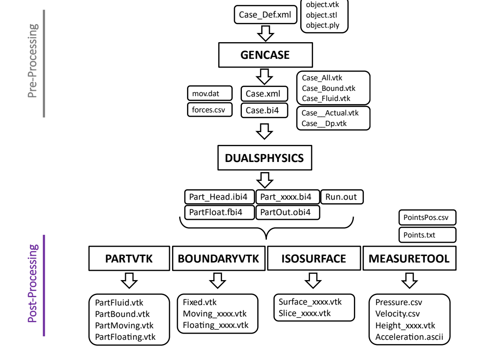
Input and output files¶
| File or family | Role |
|---|---|
Case_Def.xml |
Editable input to GenCase: case definition and user execution settings. |
Case.xml |
Execution XML written by GenCase, including generated particle information and calculated constants. |
Case.bi4 |
Initial particle data. |
Geometry .vtk, .stl, .ply |
External geometric inputs when referenced by drawing commands. |
| Motion data and acceleration CSV files | Time histories explicitly referenced by the configuration. |
Case_All.vtk, Case_Bound.vtk, Case_Fluid.vtk |
Particle geometry for visual inspection after generation. |
Case__Actual.vtk, Case__Dp.vtk and named shape files |
Geometric representations produced by the selected shape-output settings. Check the actual generated filenames. |
Part_Head.ibi4 |
Basic particle-output information used by post-processing tools. |
Part_XXXX.bi4 |
Particle state at saved times. |
PartOut.obi4 |
Particles excluded during the simulation. |
PartFloat.fbi4 |
Floating-body information. |
Run.out |
Text execution log. |
| Post-processing VTK and measurement files | Visualisation and extracted results, including particle, surface, slice, velocity, height and pressure data. |
XML is organised by element names and attributes and can be edited with a text editor. Binary particle files reduce storage and input/output overhead compared with textual particle arrays; their size advantage depends on the data and representation. The presentation quotes a sixfold reduction as its comparison, rather than a guaranteed ratio for every dataset. The binary format supports double-precision positions and additional arrays; software must use the corresponding binary reader, such as the distributed JPartDataBi4 implementation. These files are not editable XML.
VTK is used for geometric inspection and result visualisation in applications such as ParaView. The source workflow uses legacy binary POLYDATA output. The current geometry template also provides explicit VTP, VTU and STL shape-output alternatives; select formats supported by the intended tool.
Case.xml is normally produced by GenCase from Case_Def.xml. The source workflow also allows an execution XML to be prepared by the user; its generated constants, particle counts, marker ranges and binary particle data must remain mutually consistent. Editing the execution XML does not regenerate its particle data.
The workflow separates PARTVTK particle conversion, BOUNDARYVTK boundary geometry, ISOSURFACE surface reconstruction and MEASURETOOL sampled measurements. Measurement points may be supplied through PointsPos.csv or Points.txt. The illustrated outputs include Particles_XXXX.vtk, Surface_XXXX.vtk, Slices_XXXX.vtk, Velocity_XXXX.vtk and Height_XXXX.vtk; their content depends on the selected post-processing operation and saved particle fields.
XML hierarchy and editing conventions¶
The root element is case. Its casedef section supplies the information required by GenCase; execution supplies solver settings and receives generated metadata. GenCase reads and augments the execution configuration rather than treating every child as user-generated data.
| Parent | Principal children and purpose |
|---|---|
case/casedef |
constantsdef, mkconfig, geometry, initials, floatings, properties, motion and, where needed, normals. |
casedef/geometry |
Optional predefinition, particle-generation definition, and commands. |
geometry/commands |
Named auxiliary list elements and the executed mainlist. |
case/execution |
User special and parameters settings; generated particles, constants, variable exports and geometry-output information where applicable. |
execution/special |
Independent feature configurations, for example waves, damping, gauges and imposed accelerations. |
execution/parameters |
Main solver parameters and simulationdomain. |
XML names are case-sensitive. A value attribute is not interchangeable with an element name: parameter uses key and value, while other features use attributes such as v, x, time or distpt. Follow the reference for the particular element. comment and units_comment describe a setting; they do not replace its numerical value or convert units. XML comments use <!-- ... -->; literal comparison characters inside attributes must be XML-escaped where required.
An underscore-prefixed element, such as _hdp, denotes a disabled alternative in the format examples. Many special features additionally support active="true" or active="false"; this is feature-specific. Do not assume that adding active to an arbitrary element implements a general switch. In older parameter lists a # at the beginning of the key disables that legacy parameter. It is distinct from # at the beginning of a value, which requests expression evaluation.
Constants, resolution and physical scales¶
<constantsdef>
<lattice bound="2" fluid="1" comment="Type of lattice to create the initial particles (default=1)"/>
<gravity x="0" y="0" z="-9.81" comment="Gravitational acceleration" units_comment="m/s^2"/>
<rhop0 value="1000" comment="Reference density of the fluid" units_comment="kg/m^3"/>
<rhopgradient value="2" comment="Initial density gradient 1:Rhop0, 2:Water column, 3:Max. water height (default=2)"/>
<hswl value="0" auto="true" comment="Maximum height of still water to calculate speedofsound using coefsound" units_comment="metres (m)"/>
<gamma value="7" comment="Polytropic constant for water used in the state equation"/>
<speedsystem value="0" auto="true" comment="Maximum system speed (by default the dam-break propagation is used)"/>
<coefsound value="20" comment="Coefficient to multiply speedsystem"/>
<speedsound value="0" auto="true" comment="Speed of sound to use in the simulation (by default speedofsound=coefsound*speedsystem)"/>
<coefh value="0.866025" comment="Coefficient to calculate the smoothing length (h=coefh*sqrt(3*dp^2) in 3D)"/>
<_hdp value="2" comment="Alternative option to calculate the smoothing length (h=hdp*dp)"/>
<cflnumber value="0.2" comment="Coefficient to multiply dt"/>
<h value="0" auto="true" units_comment="metres (m)"/>
<b value="0" auto="true" units_comment="Pascal (Pa)"/>
<massbound value="0" auto="true" units_comment="kg"/>
<massfluid value="0" auto="true" units_comment="kg"/>
</constantsdef>
This fragment belongs to case/casedef. The current template's example uses reference density 1000 kg/m³, gravity (0, 0, −9.81) m/s², polytropic exponent 7, coefsound=20, coefh=0.866025 and cflnumber=0.2. They illustrate a water configuration; they are not a complete specification of an arbitrary fluid. A value accompanied by auto="true" requests the associated automatic calculation. A displayed zero in such an entry does not mean that the final physical quantity is zero.
| Element | Meaning and interaction |
|---|---|
lattice |
Particle-generation setting for boundary and fluid populations; retain the configuration required by the case. |
gravity |
Gravitational acceleration vector. |
rhop0 |
Fluid reference density. |
rhopgradient |
Initial density arrangement: 1 reference density, 2 water column, 3 maximum water height. |
hswl |
Maximum still-water height used when estimating the speed of sound. |
speedsystem |
Characteristic maximum system speed; the automatic estimate uses dam-break propagation. |
coefsound |
Factor applied to the characteristic system speed. |
speedsound |
Numerical speed of sound, automatic or explicitly specified. |
gamma |
Exponent in the equation of state. |
coefh or hdp |
Alternative definitions of smoothing length. Enable the intended definition, rather than both alternatives indiscriminately. |
cflnumber |
Multiplier used in the adaptive time-step criterion. |
h, b, massbound, massfluid |
Calculated quantities, with explicit alternatives available in the template. Their values and units must remain consistent with the configuration. |
Equation of state and speed of sound¶
The source estimates the characteristic system speed from the still-water height when that automatic option is used. With the magnitude of gravity denoted by g:
Do not apply the dam-break estimate as an identity for a case with an explicitly different characteristic speed. The numerical speed of sound affects compressibility and the time step; changing it is a numerical choice.
Smoothing length and particle mass¶
The presentation lists coefh=1 as typical and 1.2 or 1.5 as wave-propagation examples. These are choices to assess for the intended method, rather than replacement defaults. Its alternative hdp=1.5 directly specifies h/dp. Increasing h changes neighbour support and computational work as well as the numerical approximation.
Markers and particle ordering¶
mkfluid and mkbound identify fluid and boundary populations. They associate geometry with initialisation, motion, floating-body definitions and other features. They are not particle IDs. mkorientfluid and mkorientbound set the ordering of particles created for a population, which can be inspected with the particle idp field.
The current template below reserves 241 boundary and 9 fluid labels; the presentation's earlier illustration uses 240 and 10. Keep the counts appropriate to the case. The source describes a standard 250-label configuration, a 65,530-label GenCase_MkWord configuration and a separate solver-compilation limit above 2,048 distinct markers. These are build-dependent capabilities; the larger generator capacity does not establish that every solver binary accepts the same number of markers.
<mkconfig boundcount="241" fluidcount="9">
<mkorientbound mk="0" orient="YxZ"/>
<mkorientfluid mk="0" orient="Xyz"/>
<mkorientfluid mk="1" orient="zyx"/>
</mkconfig>
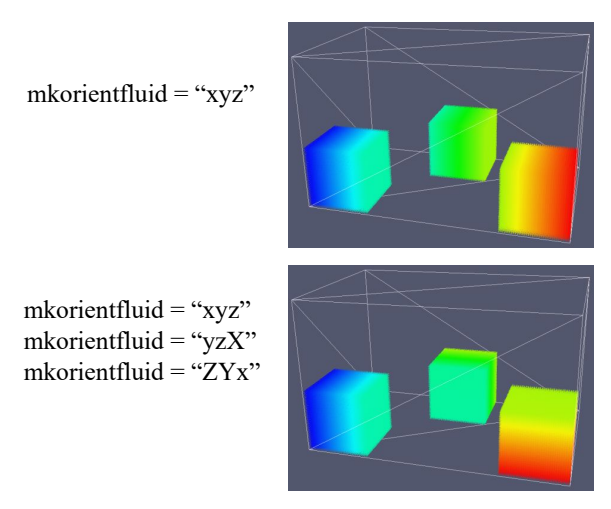
Geometry generation and computational bounds¶
geometry/definition establishes the lattice spacing dp and the region in which GenCase may create particles. Reducing dp increases particle count. Equal minimum and maximum Y coordinates define the two-dimensional X–Z configuration illustrated in the source; equality applies to the Y coordinates, not to all components of the two points.
After particle generation, the solver's default simulation bounds are calculated from the generated particle positions. They may be adjusted independently with execution/parameters/simulationdomain. A drawing region and a solver simulation domain are therefore different settings.
<definition dp="0.05" comment="Initial inter-particle distance" units_comment="metres (m)">
<pointref x="0" y="0" z="0"/>
<pointmin x="-0.25" y="-0.05" z="-0.05"/>
<pointmax x="2" y="1" z="1"/>
</definition>
Particles are created only inside the generation domain. Afterwards the simulation domain is recalculated from the minimum and maximum positions of the generated particles; it can also be configured in parameters.
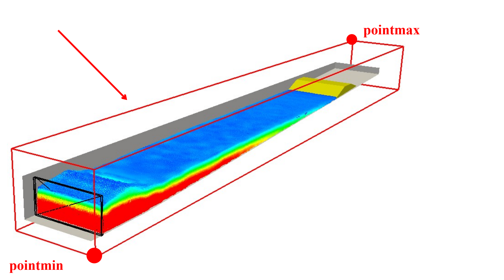
Command lists and drawing state¶
GenCase executes drawing commands in mainlist. Reusable lists are declared as list name="..." and called with runlist name="..."; times repeats a call. The source combines BoxList and CylinderList inside StructureList, then calls the assembled structure at different translations. List order matters because commands change the current marker, transformation and drawing state.
| Command or setting | Effect |
|---|---|
resetdraw |
Restore drawing defaults and delete previously drawn points. |
setdrawmode mode="wire" |
Draw edges. |
setdrawmode mode="face" |
Draw faces. |
setdrawmode mode="solid" |
Draw interiors. |
setdrawmode mode="full" |
Combine faces and interior. |
setactive drawpoints="false" |
Generate shapes without drawing particle points. |
setactive drawshapes="false" |
Disable shape generation; equivalent in purpose to setshapemode set to null. |
setactive vtkout="false" |
Do not register generated shape-output files in the XML output list. |
setshapemode |
Select actual coordinates or dp-aligned geometry and the population types represented in shape output. |
shapeout file="..." |
Write the accumulated geometric shapes. reset="true" starts a separate accumulation for subsequent shapes. |
setshapemode contains text options separated by |, for example dp | bound; its options are not a numerical parameter enumeration. Shape output helps inspect a geometry, but does not prove that a closed volume was filled correctly with particles.
<setactive drawpoints="true" drawshapes="true" vtkout="true"/>
<setdrawmode mode="wire"/>
<setdrawmode mode="face"/>
<setdrawmode mode="solid"/>
<setdrawmode mode="full"/>
<setshapemode>bound</setshapemode>
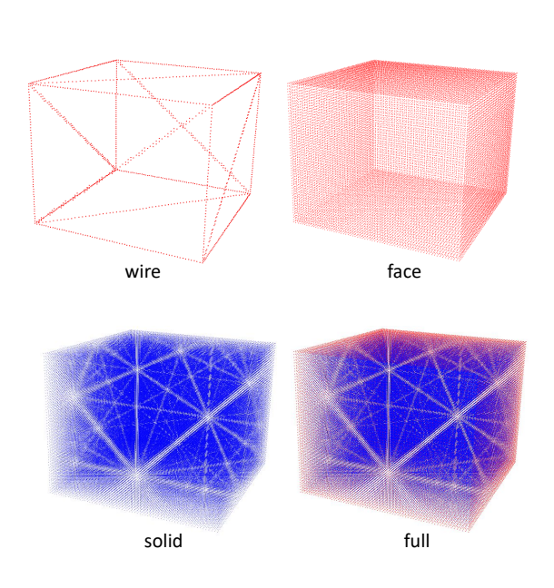
In the source tank example, fluid marker 0 is drawn with boxfill set to solid, while boundary marker 0 uses bottom | left | right | front | back, leaving the top open. The illustrated fluid box has size (0.4, 0.67, 0.3) m and the tank (1.6, 0.67, 0.4) m. The current distributed dam-break example retains these geometry values; they are case dimensions, not defaults.
setshapemode accepts coordinate choices actual and dp, and population choices fluid, bound and void; null disables shape generation. setactive enables drawpoints, drawshapes and vtkout by default in the source reference. A shape-only pass can therefore produce inspection geometry without creating SPH particles. Named outputs such as Case_Box_Dp.vtk and Case_Building_Dp.vtk distinguish selected objects; combined shape outputs such as Case__Actual.vtk and Case__Dp.vtk collect the enabled objects. The exact file prefix is supplied by the case.
The source's runlist name="StructureList" times="5" repeats a reusable structure five times. Each call executes in the current drawing state. Save and restore the transformation matrix inside a reusable list when subsequent calls should not inherit its local transformations. The following current-reference list fragments show the declaration and call syntax; their Hola names are independent of the source's named BoxList/CylinderList illustration.
Selecting populations and transforming geometry¶
setmkvoid selects empty points; setmkfluid and setmkbound select fluid or boundary points with the given local marker. setmknextfluid and setmknextbound increment or decrement the current marker according to next; setmknextauto controls automatic increments after drawing commands. A void drawing operation can remove a previously filled region before another population is drawn there.
For setmknextfluid and setmknextbound, next="true" increments the marker and next="false" decrements it. Automatic increments after each drawing command are enabled with setmknextauto auto="true" and disabled with auto="false". These commands belong in the geometry drawing list.
Transformations apply through the current drawing matrix: move translates, scale scales, rotate rotates about a direction, and rotateline defines the axis with two points. matrixsave pushes a matrix onto the stack and matrixload restores the saved matrix. matrixreset returns to the identity. Transformation order changes the result.
<move x="1" y="2" z="3"/>
<scale x="0.1" y="0.2" z="0.3"/>
<rotate ang="35" x="1.1" y="1.2" z="1.3"/>
<rotateline ang="45">
<point x="1.11" y="1.21" z="1.31"/>
<point x="1.12" y="1.22" z="1.32"/>
</rotateline>
The four panels show, in reading order, the original box, translation by (0.5, 0, 0), scaling by (2, 1.5, 0.5), and rotation by 45 degrees about (0, 0, 1). Each operation precedes the box drawing in its illustrated configuration. The source writes the illustrative command rows as move x="0.5" y="0" z="0", scale x="2" y="1.5" z="0.5" and rotate x="0" y="0" z="1" ang="45"; the drawing command is abbreviated there as drawbox …, rather than a complete XML fragment.
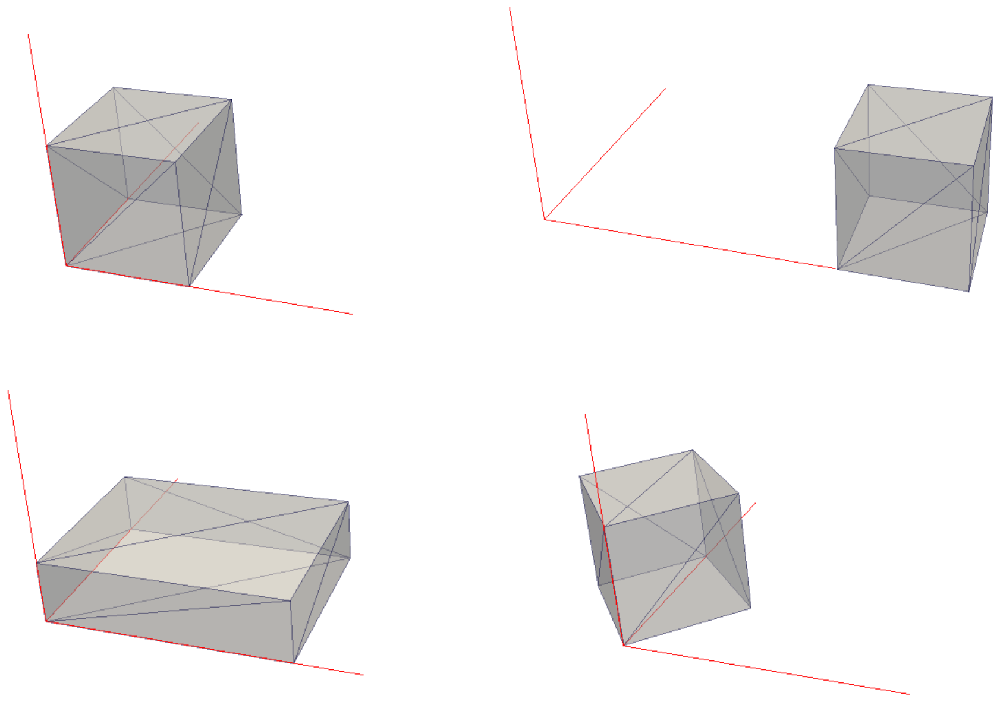
Geometric primitives¶
The following commands belong to a geometry command list. Drawing mode and current marker apply to them. Counterclockwise point order is required by the triangle illustration. Surface orientation also matters when assembling closed external geometry.
| Family | Commands and defining data |
|---|---|
| Points and lines | drawpoint, drawpoints, setlinebegin with drawlineto, two-point drawline, and multi-point drawlines. |
| Triangles and quadrilaterals | drawtriangle uses three points; drawquadri uses four and the source allows non-coplanar points. |
| Connected triangles | drawtrianglesstrip builds a strip; drawtrianglesfan builds triangles around the common first point. |
| Indexed triangles | drawtriangles separates a point list from triangles expressed as point indices. |
| Box | drawbox uses a corner and size or endpoint; boxfill selects interior or named faces. |
| Pyramid | drawpyramid starts with the top point followed by at least three base points. |
| Prism | drawprism requires an even number of at least six points; the first half describes the base and the second half the top. |
| Beach profile | drawbeach uses the lateral profile points. |
| Extrusion | drawextrude extrudes a point-defined line using an extrude vector; closed controls closure. |
| Solid defined by triangles | drawfigure fills the interior defined by its points and triangular planes; face-only output instead illustrates the surface. |
| Sphere | drawsphere uses centre point and radius. |
| Ellipsoid | drawellipsoid uses the two source-defined centre points and radius. |
| Cylinder | drawcylinder uses two axis points, radius and an optional face mask. |
<drawline>
<point x="1" y="2" z="3"/>
<point x="11" y="21" z="31"/>
</drawline>
<drawtriangle>
<point x="0" y="0" z="3"/>
<point x="0" y="3" z="0"/>
<point x="3" y="0" z="0"/>
</drawtriangle>
<drawbox>
<boxfill>bottom | left | right | front | back</boxfill>
<point x="0" y="0" z="0"/>
<size x="1" y="2" z="3"/>
</drawbox>
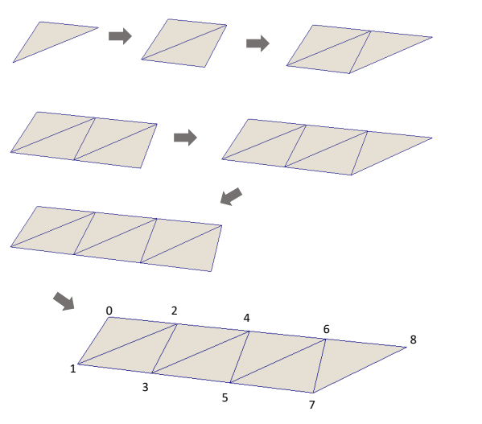
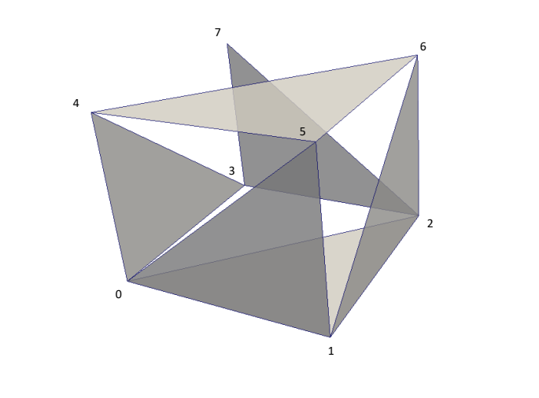
In the two lower panels, all ^ top means all faces excluding the top; bottom | left | right means only the bottom, left and right faces.
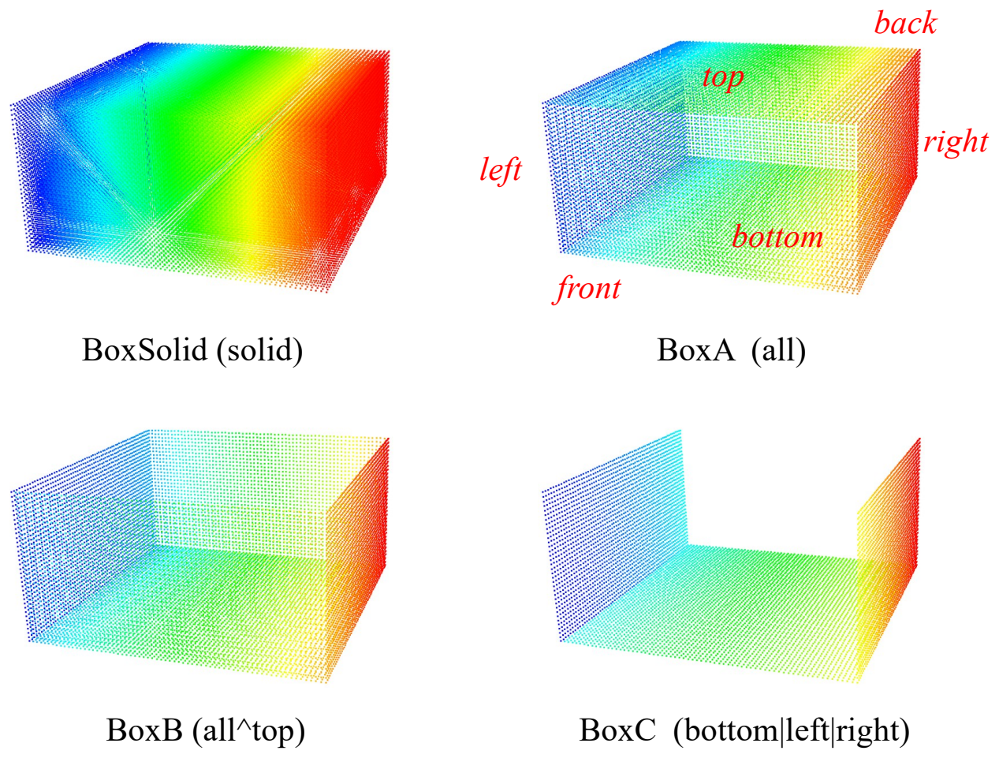
Connected lines and quadrilaterals¶
setlinebegin establishes the current point and drawlineto joins it to a new point. drawlines joins successive points; drawquadri uses four vertices, including the non-coplanar arrangement allowed by the source. The following are current-reference command fragments, inserted in a drawing list after selecting the marker and drawing mode.
<setlinebegin x="0" y="1" z="0.5"/>
<drawlineto x="10" y="11" z="10.5"/>
<drawlines>
<point x="0" y="0" z="1"/>
<point x="0" y="1" z="0"/>
<point x="1" y="0" z="0"/>
<point x="0" y="0" z="2"/>
<point x="0" y="2" z="0"/>
<point x="2" y="0" z="0"/>
</drawlines>
<drawquadri>
<point x="0" y="0" z="4"/>
<point x="0" y="4" z="0"/>
<point x="4" y="0" z="0"/>
<point x="4" y="4" z="4"/>
</drawquadri>
Triangle strips, fans and indexed faces¶
A strip reuses the last edge as each further point adds a triangle. A fan keeps the first point as its common vertex; repeating the closing outer point closes the source's circular example. Indexed faces instead refer to a shared points list. Their triangle attributes x, y and z are vertex indices, not Cartesian coordinates. Preserve ordering consistently with the intended face orientation. These current-reference fragments illustrate all three forms.
<drawtrianglesstrip>
<point x="0" y="1" z="0"/>
<point x="0" y="0" z="0"/>
<point x="1" y="1" z="0"/>
<point x="1" y="0" z="0"/>
<point x="2" y="1" z="0"/>
<point x="2" y="0" z="0"/>
<point x="3" y="1" z="0"/>
<point x="3" y="0" z="0"/>
<point x="4" y="1" z="0"/>
</drawtrianglesstrip>
<drawtrianglesfan>
<point x="0" y="0" z="0"/>
<point x="1" y="0" z="0"/>
<point x="0.9" y="0.5" z="0"/>
<point x="0.5" y="0.9" z="0"/>
<point x="0" y="1" z="0"/>
<point x="-0.5" y="0.9" z="0"/>
</drawtrianglesfan>
<drawtriangles>
<points>
<point x="0" y="0" z="0"/>
<point x="1" y="0" z="0"/>
<point x="1" y="1" z="0"/>
<point x="0" y="1" z="0"/>
<point x="0" y="0" z="0.8"/>
<point x="1" y="0" z="0.8"/>
<point x="1" y="1" z="0.8"/>
<point x="0" y="1" z="0.8"/>
</points>
<triangles>
<triangle x="0" y="1" z="5"/>
<triangle x="1" y="2" z="6"/>
<triangle x="2" y="3" z="7"/>
<triangle x="3" y="0" z="4"/>
<triangle x="0" y="2" z="1"/>
<triangle x="4" y="5" z="6"/>
</triangles>
</drawtriangles>
The open fan uses the six-point drawtrianglesfan example above and is saved as TrianglesFan with reset="true". The closed source fan uses the following ordered points; the last repeats the first outer point, labelled 1/10 in the figure. Both source fans select boundary marker 0 and shape mode dp | bound.
<setmkbound mk="0"/>
<drawtrianglesfan>
<point x="0" y="0" z="1"/>
<point x="1" y="0" z="0"/>
<point x="0.8" y="0.6" z="0"/>
<point x="0.2" y="1" z="0"/>
<point x="-0.5" y="0.9" z="0"/>
<point x="-0.9" y="0.3" z="0"/>
<point x="-0.9" y="-0.3" z="0"/>
<point x="-0.5" y="-0.9" z="0"/>
<point x="0.2" y="-1" z="0"/>
<point x="0.8" y="-0.6" z="0"/>
<point x="1" y="0" z="0"/>
</drawtrianglesfan>
<shapeout file="TrianglesFan2" reset="true"/>
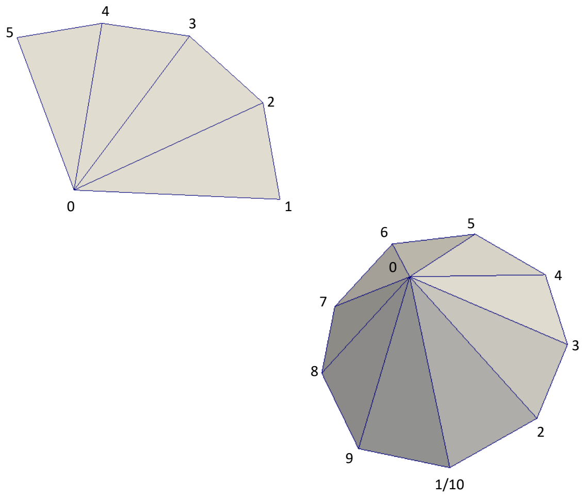
Polyhedra, extrusion and filled figures¶
For drawpyramid, the first point is the apex and the remaining points define the base. drawprism pairs the first half of its points with the second half: the source includes non-rectangular star profiles and a twisted prism, so this is not restricted to a rectangular box. Face masks follow that point order. A beach is described by lateral-profile points; an extrusion adds its displacement vector to each profile vertex. In the source drawfigure example, indexed point triples specify planes whose interior sides define the solid; they do not form a closed mesh of finite triangular faces. drawtriangles or face drawing represents the surface. The pyramid fragment retains the source's unmasked example (mask=0) and matching vertex coordinates; the other fragments use the current reference's own illustrative inputs. A different mask is a different face selection, not a syntax-only replacement for source masks 2 or 128.
<drawfigure>
<points>
<point x="0" y="0" z="0"/>
<point x="1" y="0" z="0"/>
<point x="1" y="1" z="0"/>
<point x="0" y="1" z="0"/>
<point x="0" y="0" z="0.8"/>
<point x="1" y="0" z="0.8"/>
<point x="1" y="1" z="0.8"/>
<point x="0" y="1" z="0.8"/>
</points>
<triangles>
<triangle x="0" y="1" z="5"/>
<triangle x="1" y="2" z="6"/>
<triangle x="2" y="3" z="7"/>
</triangles>
</drawfigure>
<drawpyramid mask="0">
<point x="0.25" y="0.25" z="0.7"/>
<point x="0" y="0" z="0"/>
<point x="1" y="0" z="0"/>
<point x="0" y="1" z="0"/>
</drawpyramid>
<drawprism>
<point x="0" y="0" z="0"/>
<point x="1" y="0" z="0"/>
<point x="0" y="1" z="0"/>
<point x="0" y="0" z="0.5"/>
<point x="1" y="0" z="0.5"/>
<point x="0" y="1" z="0.5"/>
</drawprism>
<drawbeach mask="1">
<point x="0" y="3" z="1.2"/>
<point x="0" y="3" z="0"/>
<point x="1.7" y="3" z="0"/>
<point x="3.5" y="3" z="0.5"/>
<point x="5.5" y="3" z="0.5"/>
<point x="5.5" y="3" z="1.2"/>
</drawbeach>
The twisted prism pairs the first four base points with the following four top points. The source selects boundary marker 0, mask="0", shape mode dp | bound, and output Prism4 with reset enabled. Its surrounding setdrawmode row says mode="fill"; the current template lists full, not fill. That source spelling is recorded here without silently translating its execution meaning.
<drawprism mask="0">
<point x="0" y="0" z="0"/>
<point x="4" y="0" z="0"/>
<point x="4" y="4" z="0"/>
<point x="0" y="4" z="0"/>
<point x="2" y="1" z="5"/>
<point x="3" y="2" z="5"/>
<point x="2" y="3" z="5"/>
<point x="1" y="2" z="5"/>
</drawprism>
<shapeout file="Prism4" reset="true"/>
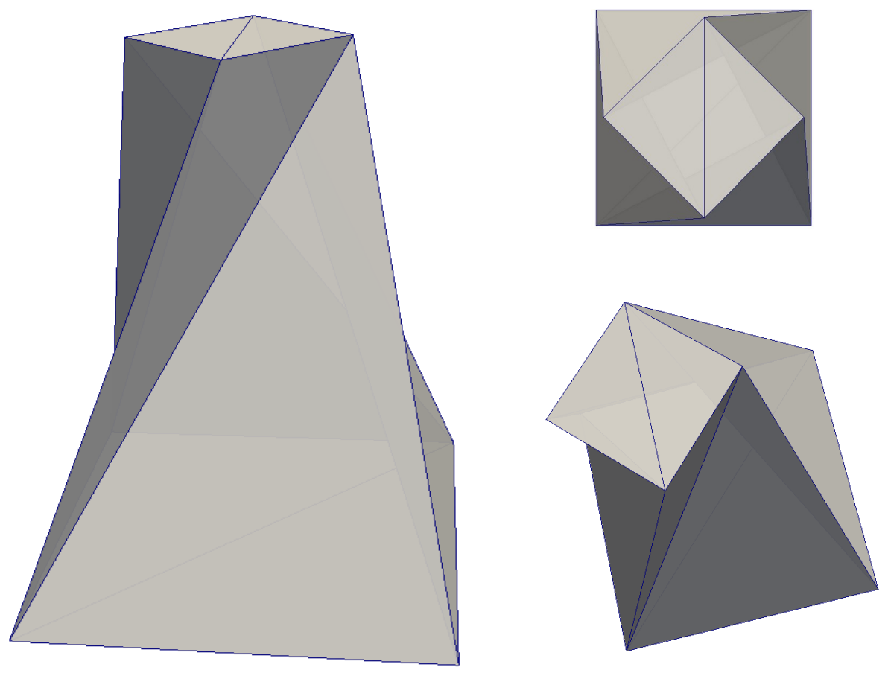
The left panel is the source solid drawfigure; the right is its face representation (drawtriangles or face-mode drawfigure). The source uses the complete eight-point and six-triangle lists already given in the drawtriangles block above: (0,1,5), (1,2,6), (2,3,7), (3,0,4), (0,2,1) and (4,5,6). Its wrapper selects boundary marker 0 and shape mode dp | bound. The separate current-reference drawfigure fragment above contains three planes; it is a different illustrative input, whose equivalence to the source volume has not been established.
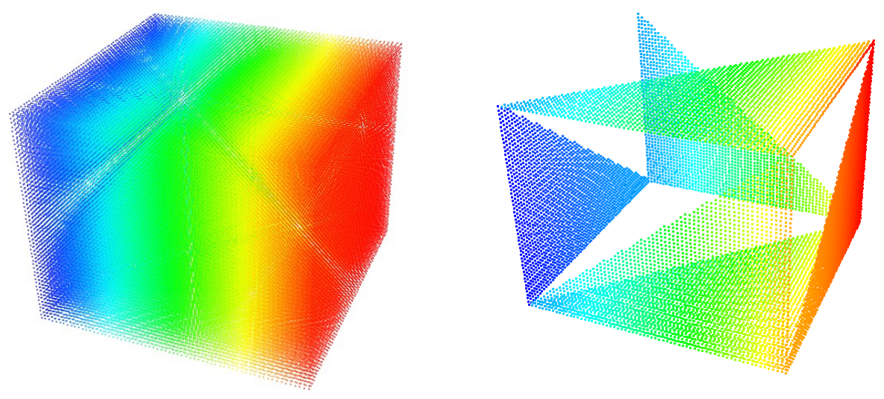
A prism needs at least six points and an even point count. Its first half defines the base and its second half the corresponding top. In the star-profile illustration, both halves have the same X/Y coordinates at Z=0 and Z=6. The source selects boundary marker 0, shape mode dp | bound, and saves Prism3 with reset enabled. As in the twisted-prism source, its wrapper says setdrawmode mode="fill"; this historical spelling is not silently changed to the current template’s full.
<drawprism mask="0">
<point x="0" y="0" z="0"/>
<point x="1" y="-3" z="0"/>
<point x="2" y="0" z="0"/>
<point x="5" y="1" z="0"/>
<point x="2" y="2" z="0"/>
<point x="1" y="5" z="0"/>
<point x="0" y="2" z="0"/>
<point x="-3" y="1" z="0"/>
<point x="0" y="0" z="6"/>
<point x="1" y="-3" z="6"/>
<point x="2" y="0" z="6"/>
<point x="5" y="1" z="6"/>
<point x="2" y="2" z="6"/>
<point x="1" y="5" z="6"/>
<point x="0" y="2" z="6"/>
<point x="-3" y="1" z="6"/>
</drawprism>
<shapeout file="Prism3" reset="true"/>
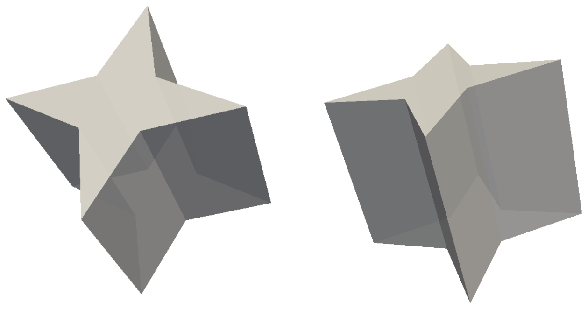
The labelled extrusion uses profile points P0–P5 in order and displacement (0, 3, 0). This is the source profile; the separate layered current-reference example below uses different Y coordinates and adds layers.
<mainlist>
<setmkbound mk="0"/>
<drawextrude closed="false">
<point x="0" y="0" z="1.2"/>
<point x="0" y="0" z="0"/>
<point x="1.7" y="0" z="0"/>
<point x="3.5" y="0" z="0.5"/>
<point x="5.5" y="0" z="0.5"/>
<point x="5.5" y="0" z="1.2"/>
<extrude x="0" y="3" z="0"/>
</drawextrude>
</mainlist>
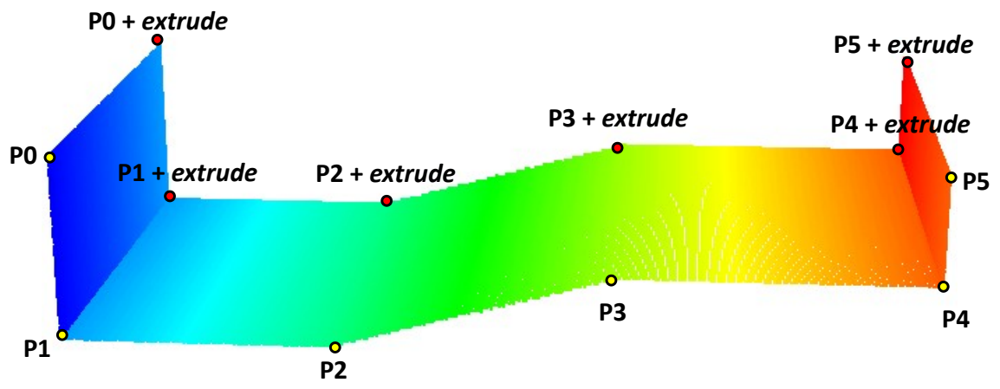
Rounded primitives and surface-width settings¶
A sphere uses a centre and radius, an ellipsoid uses the two centre points and radius specified by the command, and a cylinder uses two axial points and radius. In face drawing, ctesphere, cteellipsoid, ctecylindertube and ctecylindercover control the corresponding drawn widths. The source illustrates 0.4, 0.5, 0.6 and 0.7 respectively, whereas the current reference provides different illustrative values. These are geometry-dependent choices. ctespherenumsides and ctecylindernumsides affect the polygonal shape representation, not the particle spacing dp. The current-reference examples below preserve their values.
<setdpctes cteline="1.5" ctetriangleweight="1.5" ctetrianglelimits="1.5" ctesphere="1.5" ctespherenumsides="24" cteellipsoid="1.5" ctecylindertube="1.5" ctecylindercover="1.5" ctecylindernumsides="24" cterevolutionnumsides="24"/>
<drawellipsoid radius="1.5">
<point x="1" y="0" z="0"/>
<point x="1" y="1" z="1"/>
</drawellipsoid>
<drawcylinder radius="0.85" mask="1">
<point x="1" y="1" z="0"/>
<point x="1" y="1" z="1"/>
</drawcylinder>
The left cylinder is solid and the right cylinder uses face drawing. Their original input coordinates and face-width settings are reproduced here. The source’s explanatory last line names ctespherenumsides while its cylinder code uses ctecylindernumsides; that mismatch is retained as a source-text discrepancy rather than changing either setting.
<mainlist>
<setmkbound mk="0"/>
<setdrawmode mode="solid"/>
<drawcylinder radius="1" mask="0">
<point x="1.5" y="1.5" z="0.5"/>
<point x="1.5" y="1.5" z="3"/>
</drawcylinder>
<setdrawmode mode="face"/>
<drawcylinder radius="1" mask="0">
<point x="3.5" y="2.5" z="0.5"/>
<point x="3.5" y="2.5" z="3"/>
</drawcylinder>
</mainlist>
<setdpctes ctecylindertube="0.6"/>
<setdpctes ctecylindercover="0.7"/>
<setdpctes ctecylindernumsides="40"/>
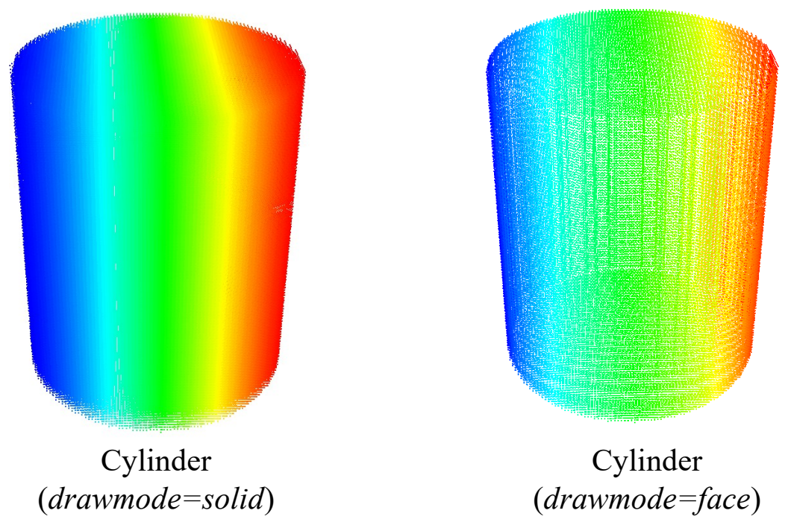
Face masks, curved surfaces and layers¶
A polyhedron mask identifies faces to hide. In the bit-mask form, decimal 0 hides none; 1, 2, 4 and 8 select the first through fourth faces; 12 is binary 1100 and hides the third and fourth. For pyramids the first bit is the base. For prisms the first two are base and top, followed by lateral faces. The source beach example uses 128, binary 10000000, to hide the eighth face.
The alternative face-index notation uses |, for example mask="1 | 2 | 6 | 7". The source uses mask="X|X" when a single face index must be distinguished from an integer bit mask. Do not interpret a single decimal mask value as a face number without that distinction.
For curved faces, setdpctes controls the drawing width coefficients: ctesphere, cteellipsoid, ctecylindertube and ctecylindercover. ctespherenumsides and ctecylindernumsides control the polygonal resolution of the corresponding VTK representations. The source's sphere/cylinder illustrations use 40 sides; the current template also illustrates 24. These tessellation examples are not universal accuracy settings.
In free-draw mode, layers vdp="..." offsets layers by multiples of dp for boxes, extrusions, spheres and cylinders. Zero is the reference layer; signed values lie on different sides of it. An asterisk marks a layer whose shape is saved by shapeout. The source shows box offsets 0,-1, cylinder offsets 0,1,3,4 and extrusion offsets 0,-1,-2.
<drawextrude closed="false">
<point x="0" y="0" z="1.2"/>
<point x="0" y="0" z="0"/>
<point x="1.7" y="1" z="0"/>
<point x="3.5" y="1" z="0.5"/>
<point x="5.5" y="2" z="0.5"/>
<point x="5.5" y="2" z="1.2"/>
<extrude x="0" y="3" z="0"/>
<layers vdp="-1*,0,1*"/>
</drawextrude>
<drawsphere radius="0.8">
<point x="1" y="1" z="0"/>
<layers vdp="-0.5*,-1.5"/>
</drawsphere>
The illustrated source is named CaseWavemaker_Def.xml. Faces 1, 2, 6 and 7 are omitted, leaving faces 3, 4 and 5; the wireframe and numbered views retain their correspondence.
<setmkbound mk="0"/>
<drawprism mask="1 | 2 | 6 | 7">
<point x="5" y="0" z="1.5"/>
<point x="5" y="0" z="1.1"/>
<point x="1" y="0" z="0"/>
<point x="0" y="0" z="0"/>
<point x="0" y="0" z="1.5"/>
<point x="5" y="2" z="1.5"/>
<point x="5" y="2" z="1.1"/>
<point x="1" y="2" z="0"/>
<point x="0" y="2" z="0"/>
<point x="0" y="2" z="1.5"/>
</drawprism>
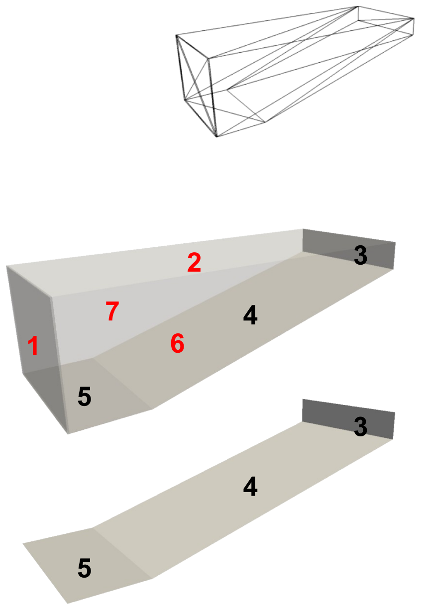
The left box shows offsets 0,-1, the centre cylinder 0,1,3,4, and the lower extrusion 0,-1,-2, in multiples of dp. The source’s full example also marks saved shapes with asterisks: 0*,-1, 0,1,3,4* and 0*,-1,-2, respectively. These are source geometry inputs, independent of the smaller current-reference layered fragment above.
<mainlist>
<setshapemode>actual | bound</setshapemode>
<setfrdrawmode auto="true"/>
<setmkbound mk="0"/>
<drawbox>
<boxfill>all</boxfill>
<point x="2" y="-1" z="1.5"/>
<size x="1.4" y="2" z="2"/>
<layers vdp="0*,-1"/>
</drawbox>
<drawcylinder radius="0.5" mask="2">
<point x="7" y="-1" z="2.5"/>
<point x="7" y="1" z="2.5"/>
<layers vdp="0,1,3,4*"/>
</drawcylinder>
<drawextrude closed="false">
<point x="0" y="0" z="3"/>
<point x="2" y="0" z="0"/>
<point x="8" y="0" z="0"/>
<point x="9" y="0" z="1"/>
<point x="10" y="0" z="1"/>
<point x="10" y="0" z="2"/>
<point x="11" y="0" z="2"/>
<point x="12" y="0" z="3"/>
<extrude x="0" y="1" z="0"/>
<layers vdp="0*,-1,-2"/>
</drawextrude>
<shapeout file="" reset="true"/>
</mainlist>
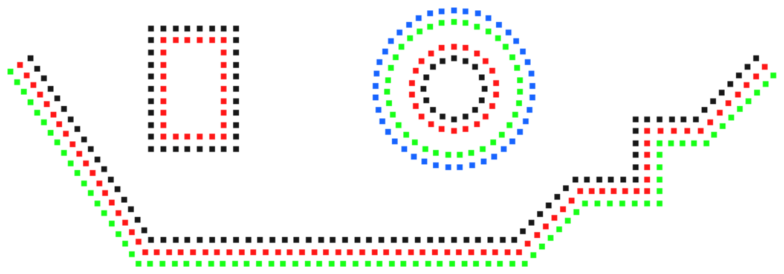
External geometry and bathymetry¶
drawfilestl, drawfileply and drawfilevtk convert external geometry to points. The VTK reader also supports the VTP and VTU alternatives shown in the current template. Local drawmove, drawrotate and drawscale transform the imported object. polyselec selects points, lines, triangles or polygonal entities where supported. The pump illustration assigns separate boundary markers to the fixed casing and moving rotor, then fills the enclosed fluid region.
Import-local transformations are children of the file-drawing element. drawmove and drawscale use X/Y/Z components, while drawrotate uses angx, angy and angz. For VTK input, polyselec contains selection text: points, points | lines, triangles or polygons in the source examples. The following source forms are also present in the current template; they illustrate separate external files.
<drawfilestl file="File.stl">
<drawmove x="0.5" y="0" z="0"/>
<drawrotate angx="10" angy="15" angz="30"/>
<drawscale x="1" y="1" z="0.8"/>
</drawfilestl>
<drawfilevtk file="File.vtk">
<polyselec>points | lines</polyselec>
</drawfilevtk>
Normal drawing can create points outside a surface and the source's basic fill operation depends on the centre lying inside. Advanced filling uses advanced="true" with a configurable depthmin and depthmax. It requires a closed, hole-free model with consistently oriented faces and no internal faces. Only the intended interior layers should then be created. The distance to the surface is important when preparing mDBC boundaries; inspect the result rather than assuming that an imported CAD model meets these requirements.
<drawfilevtk file="File.vtk" advanced="true">
<depth depthmin="0.02" depthmax="0.1"/>
</drawfilevtk>
In the pump illustration, pump_fixed.vtk is the grey casing (boundary marker 0) and pump_moving.vtk is the purple rotor (boundary marker 1). The lower row shows their combined geometry and the conversion from VTK geometry to points. The illustrated fluid marker is 0. The following source fragment also supplies the seed point and fill limits used in Figure 20.
<mainlist>
<setshapemode>real | bound | dp</setshapemode>
<setmkbound mk="0"/>
<drawfilevtk file="pump_fixed.vtk"/>
<setmkbound mk="1"/>
<drawfilevtk file="pump_moving.vtk"/>
<setmkfluid mk="0"/>
<fillbox x="0.14" y="-0.1" z="-0.39">
<modefill>void</modefill>
<point x="-0.6" y="-0.39" z="-0.8"/>
<size x="0.9" y="0.68" z="0.52"/>
</fillbox>
</mainlist>
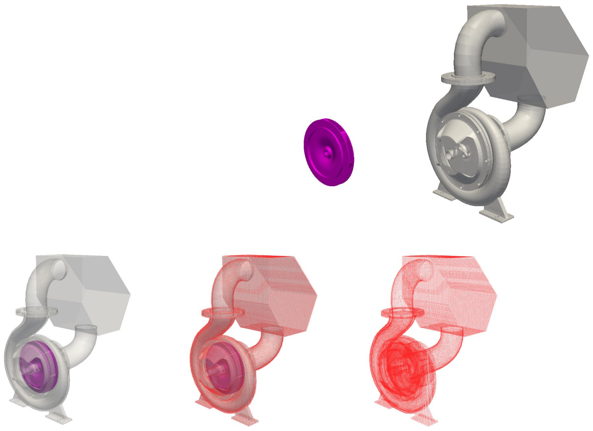
The depth diagram marks depthmin = 3 dp and depthmax = 7 dp. The two pump results compare depthmin=0 and depthmin=0.2; their dark rendering backgrounds are part of the original visualisation. The separate current-reference advanced-fill XML above illustrates <depth depthmin="0.02" depthmax="0.1"/>. These distinct examples retain their original values.
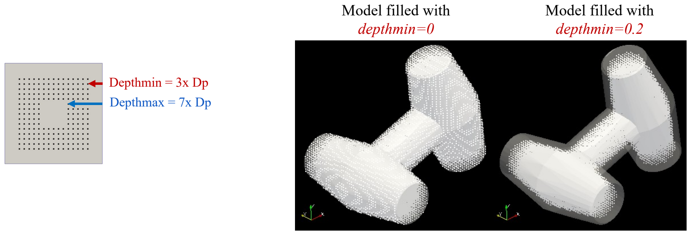
drawbathymetry generates a regular surface grid from XYZ or VTK elevation points. zpoints specifies the data and optional translation, rotation, scaling and selection. grid dp="..." specifies grid spacing independently of the particle-generation dp. initdomain defines the initial grid extent. expands extends its X/Y borders and can specify first and second extension sizes and elevations. periodicx and periodicy adjust opposite elevations; rampwidth specifies the transition and flatwidth extends the periodic limits. finalmove translates the completed grid. savepoints and savegrid write diagnostic geometry.
<drawbathymetry>
<zpoints file="FileData.xyz" comment="File with positions using format XYZ or VTK">
<move x="1" y="2" z="3"/>
<rotate x="15" y="30" z="45"/>
<scale x="1" y="1" z="2"/>
<selection>
<point x="10" y="15"/>
<size x="100" y="150"/>
</selection>
</zpoints>
<grid dp="0.1">
<initdomain>
<point x="25" y="35"/>
<size x="40" y="20"/>
</initdomain>
<expands>
<xmin size="5" z="25" size2="52" z2="252"/>
<xmax size="4" z="24" size2="54"/>
<ymin size="3" size2="53" z2="253"/>
<ymax size="-2"/>
</expands>
<periodicx rampwidth="0"/>
<periodicy rampwidth="10" flatwidth="1"/>
<finalmove x="18" y="10" z="28"/>
</grid>
<savepoints file="true" comment="Saves VTK with final positions for debug (default=false)"/>
<savegrid file="true" comment="Saves VTK with final grid cells for debug (default=false)"/>
</drawbathymetry>
The source bathymetry illustration uses the following inputs. Its old rotate row uses angx/angy/angz and its diagnostic rows use value, whereas the current template above uses other attribute spellings. The table preserves the original data and disabled row without presenting a silently migrated executable configuration.
| Source row | Original values |
|---|---|
| Boundary marker | setmkbound mk="0" |
| Input | zpoints file="Points.xyz" |
| Translation | move x="-439998.30" y="-1148505.00" z="0" |
| Rotation | rotate angx="0" angy="0" angz="0" |
| Scale | scale x="1" y="1" z="2" |
| Selection | point x="170" y="20"; size x="110" y="70" |
| Grid spacing | grid dp="2" |
| Initial grid | point x="180" y="30"; size x="90" y="50" |
| Expansion | xmin size="10" z="15" size2="8" |
| Disabled source comment | <!-- <periodicx rampwidth="8" flatwidth="4"/> --> |
| Active periodic boundary | periodicy rampwidth="8" |
| Final translation | finalmove x="-162" y="-30" z="-19" |
| Diagnostic points | savepoints value="true" comment="Saves VTK with final for debug (default=0)" |
| Diagnostic grid | savegrid value="true" comment="Saves VTK with final grid cells for debug (default=0)" |
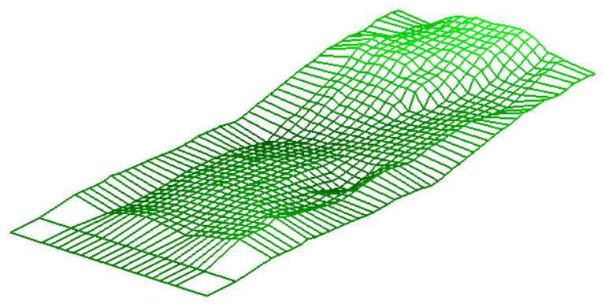
Filling, redrawing and free drawing¶
Filling starts from a seed point. fillpoint fills the connected region; fillbox, fillfigure and fillprism additionally restrict it to the corresponding volume. fillvoidpoint is the direct void-fill alternative. modefill identifies the populations to fill (void, fluid, bound) or uses border to fill within limits identified by existing points. A seed outside the intended enclosed volume can produce a different region.
redraw changes qualifying nodes to the currently selected marker; mkfluid or mkbound restricts the original population. redrawnear additionally requires neighbouring nodes of a selected type or marker. targettp and targetmk describe the nodes to change; bordertp and bordermk describe the neighbours. times repeats the operation. redrawbox and redrawnearbox restrict the affected region.
The source demonstrates three distinct operations: change every fluid-marker-1 node to boundary marker 3; change fluid nodes adjacent to any boundary; and change void nodes adjacent specifically to boundary marker 2. The hole-closing workflow first draws the boundary, redraws neighbouring void nodes to close small gaps, and then fills with fluid. Reversing that sequence can change the result.
setfrdrawmode auto="true" draws particles away from the Cartesian lattice while maintaining the initial dp spacing; return to auto="false" afterwards. Its rounded-surface examples show why free drawing and lattice drawing produce different particle layouts.
<fillbox x="0" y="1" z="0">
<modefill>border</modefill>
<point x="0.1" y="1" z="1.1"/>
<size x="3" y="4" z="2"/>
</fillbox>
<redrawnear targettp="fluid" bordertp="bound"/>
The red point is the fill seed (0.14, -0.1, -0.39). The black wireframe is the limiting box, starting at (-0.6, -0.39, -0.8) with size (0.9, 0.68, 0.52). Filling uses fluid marker 0 and modefill=void, as in the pump fragment above; it fills void space only up to the specified box limits.
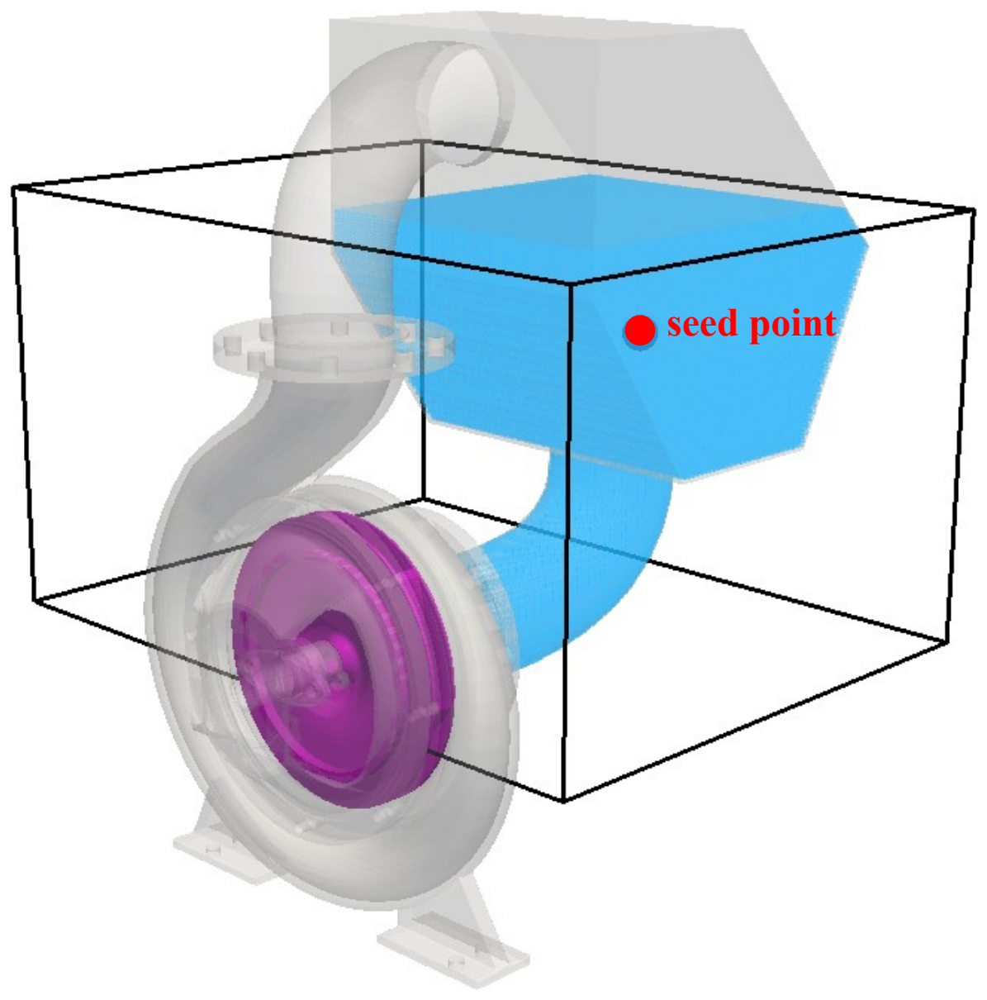
The original node example uses the following three alternatives independently, starting from the common upper-left panel. A changes fluid-marker-1 nodes to boundary marker 3; B changes fluid nodes next to any boundary; C changes void nodes next to boundary marker 2. The arrows retain those panel correspondences.
<!-- A -->
<setmkbound mk="3"/>
<redraw mkfluid="1"/>
<!-- B: alternative -->
<setmkbound mk="3"/>
<redrawnear targettp="fluid" bordertp="bound"/>
<!-- C: alternative -->
<setmkbound mk="3"/>
<redrawnear targettp="void" bordertp="bound" bordermk="2"/>
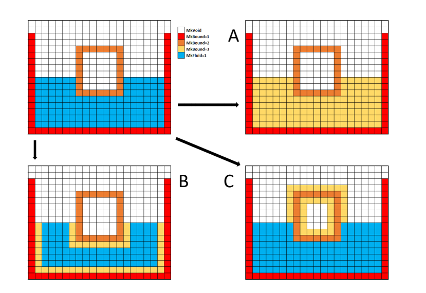
The source sphere uses radius 5.0 and centre (0, 0, 5.0) with boundary marker 0 named Sphere, setdrawmode mode="full", and setfrdrawmode auto="true", restored to false after drawing. The face cylinder uses radius 4.0, mask="0", endpoints (0, 0, 0) and (0, 0, 10), and boundary marker 0 named Cylinder; free drawing is likewise switched off afterwards. The panels compare normal lattice sampling with free drawing while maintaining the same initial dp.
These are command fragments for case/casedef/geometry/commands/mainlist, not complete standalone cases.
Sphere
<setdrawmode mode="full"/>
<setmkbound mk="0" name="Sphere"/>
<setfrdrawmode auto="true"/>
<drawsphere radius="5.0">
<point x="0" y="0" z="5.0"/>
</drawsphere>
<setfrdrawmode auto="false"/>
Cylinder
<setdrawmode mode="face"/>
<setmkbound mk="0" name="Cylinder"/>
<setfrdrawmode auto="true"/>
<drawcylinder radius="4.0" mask="0">
<point x="0" y="0" z="0"/>
<point x="0" y="0" z="10"/>
</drawcylinder>
<setfrdrawmode auto="false"/>
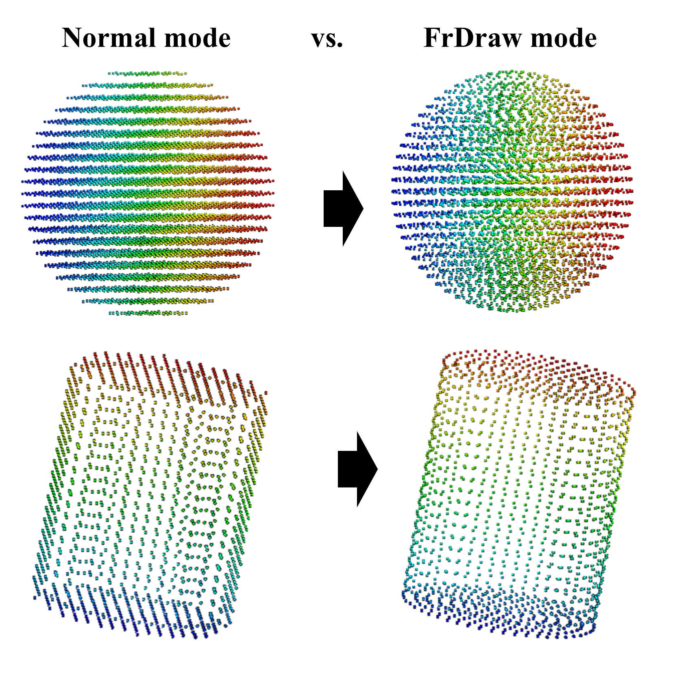
The three stages are boundary drawing, closing boundary holes with neighbouring void nodes, and filling the fluid region. The corresponding source fragment keeps the original sequence and Bottom.vtk dependency.
<mainlist>
<setshapemode>real | bound</setshapemode>
<setdrawmode mode="full"/>
<!-- Creates vertical piston. -->
<setmkbound mk="0"/>
<drawline>
<point x="0" y="0" z="2"/>
<point x="0" y="0" z="0"/>
</drawline>
<!-- Creates bottom from external geometry. -->
<setmkbound mk="1"/>
<drawfilevtk file="Bottom.vtk"/>
<!-- Fills the holes. -->
<setmkbound mk="2"/>
<redrawnear times="1" targettp="void" bordertp="bound" bordermk="1"/>
<!-- Fills fluid area. -->
<setmkfluid mk="0"/>
<fillbox x="0.5" y="0" z="0.5">
<modefill>void</modefill>
<point x="0" y="-1" z="0"/>
<size x="6" y="2" z="1.5"/>
</fillbox>
</mainlist>
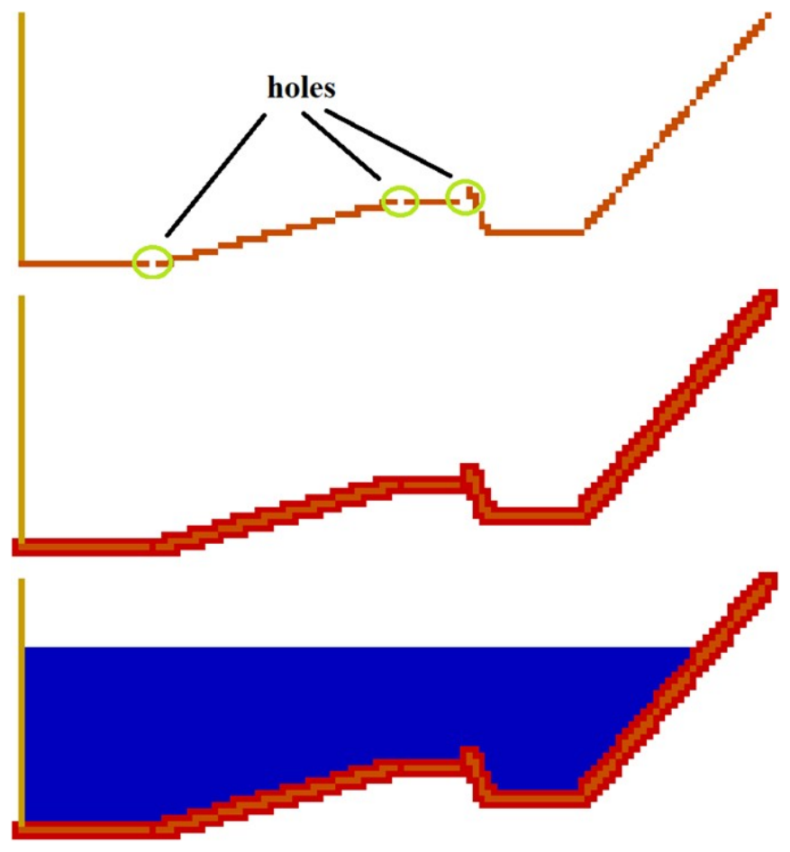
Variables and expressions¶
Variables allow the same dimensions, filenames and numerical relationships to be reused without manually editing each occurrence. newvar creates numerical variables in double precision; newvarstr creates text variables. newvarcte and newvarstrcte create constants that cannot subsequently be changed. Boolean true and false are stored numerically as 1 and 0. Variables are created in sequence, so a definition may use earlier definitions.
Use setvar or setvarstr to change a non-constant variable. In the current template the metadata attributes are _rem for a comment and _print for displaying a value. printf text="..." displays expressions and text. User names are global within the case definition; avoid duplicate declarations or redefining automatic constants.
geometry/predefinition is evaluated before geometry/definition, allowing variables to define dp and domain limits. Drawing-list variables are evaluated when their commands execute. A numeric variable or expression used as an ordinary XML attribute value starts with #; text substitutions use $ followed by a bracketed expression, for example $[file]. Inside a variable-expression definition, bracketed substitutions can concatenate text and numerical results. Preserve expressions rather than replacing them with an approximate decimal.
<predefinition>
<newvarcte SizeX="1.2" _rem="Domain width" />
<newvar SizeZ="SizeX*0.8" Dp="SizeX/100" />
<newvarstr FileSTL="cube.stl" />
</predefinition>
The variables above can supply dp="#Dp" and expressions for the domain coordinates; the imported object can use file="$[FileSTL]". The presentation's separate example uses lowercase sizex and sizez, with maximum Z #sizez. Its printed X bounds are #-sizex/2 and #-sizex. For its positive sizex=1.2, that ordering needs confirmation; no intended positive upper bound is inferred here. A numerical or logical if condition can control recognised drawing commands.
| Automatically supplied values | Availability described by the source |
|---|---|
Gravity_x, Gravity_y, Gravity_z, Rhop0 |
Loaded before predefinition. |
Dp |
Initial spacing; predefinition can be used to define its final value. |
PosMin_x/y/z, PosMax_x/y/z |
Loaded or calculated domain limits. |
CaseName, Data2D, Data2DPosy, H, MassBound, MassFluid |
Calculated before drawing-list evaluation. |
Solver B, Gamma, TimeMax, TimeOut and the preceding physical constants |
Available when the solver creates its execution variables. |
exportvar vars="..." selects user variables passed to the generated execution/uservars section. The current template supports inclusions and exclusions such as all,-Dp,-PosMin_?. Generated varnum and varstr entries are execution metadata, not replacements for the original variable definitions.
Operators and functions¶
Arithmetic uses +, -, * and /; comparison uses ==, !=, <, >, <= and >=; the source presentation writes logical NOT, OR and AND as !, || and @@ respectively. Use the operator spelling documented for the expression evaluator supplied with the case. Escape XML-sensitive characters inside attributes. Parentheses set evaluation order.
The current template illustrates pi, e, float, int, floor, ceil, round, min, max, abs, fmod, fmodr, sqrt, exp, log, log10 and pow. Trigonometric functions sin, cos and tan use radians; sindg, cosdg and tandg use degrees. Hyperbolic and inverse functions include sinh, cosh, tanh, asin, acos, atan and atan2.
For minimum and maximum selection, the current template demonstrates min(a,b), min(a,b,c), max(a,b) and max(a,b,c). The presentation additionally lists four-argument forms; those signatures are not established by the inspected current template. It defines fmodr(a,b) as round(fmod(a,b)), whereas the current template lists the function without defining that identity. These source-only details require confirmation before being treated as current evaluator rules.
eval(condition,a,b) selects a or b. wavelength(gravity,depth,period) calculates wavelength from its named inputs. The current template illustrates random-number functions as randinit(a), rand(a), rand(a,b) and randint(a,b); use these documented names rather than assuming that an older random() spelling is interchangeable. Seed selection affects reproducibility. The template also includes position-rounding and matrix-component functions for geometry-dependent expressions.
roundpos(pos,posmin,dp) rounds a position to a specified grid; roundposx, roundposy and roundposz use the corresponding configured directions. mulmatx(x,y,z), mulmaty(x,y,z) and mulmatz(x,y,z) return components after applying the drawing transformation matrix. The current template also demonstrates indexed names, such as x[1], and bracketed expressions in text-variable definitions. These functions preserve geometric relationships without replacing expressions by rounded constants.
Variables are used in the source's geometry, initials, floatings, properties, motion, normals, special and parameters sections. The evaluation stage still matters: values calculated only after geometry generation cannot be used to define earlier input. exportvar controls which user variables are available when execution sections are evaluated.
Initial conditions and final particle transformations¶
casedef/initials applies initial values to populations selected by mkfluid or mkbound. This is distinct from a velocity prescribed throughout execution. A fluid can begin with a uniform vector, a height-dependent velocity profile or data interpolated from a previous particle field.
The source sphere begins with velocity (1.05, 0, 4.905) m/s and the box with (−0.875, 0, 5.886) m/s. Their markers, initial geometry and later motion are distinct. The following initial-velocity fragment preserves those values.
<initials>
<velocity mkfluid="1" x="1.05" y="0" z="4.905" />
<velocity mkfluid="2" x="-0.875" y="0" z="5.886" />
</initials>
The source also lists velwave for a solitary-wave initial velocity, separately from the moving piston_solitary wavemaker used during execution. The current GenCase template retains this form under casedef/initials. Its example specifies fluid marker 3, depth 4, hmaxwave=3, reference position x0=26 and negative="false"; these values are illustrative inputs rather than defaults or a claim of a physically validated solitary wave. The selected marker must already exist in the generated fluid geometry.
Profiles and previous particle fields¶
A profile contains a direction and one of velocity, velocity2 or velocity3. These specify uniform, linear or parabolic profiles respectively. The source linear profile rises from 1 m/s at z=0 to 5 m/s at z=1 m. Its parabolic example uses 1 m/s at z=0, 3.1 m/s at z=0.3 m and 5 m/s at z=1 m. These triples define the example polynomial; do not substitute profile values from another method or case.
<velocity mkfluid="7">
<direction x="1" y="0" z="0" />
<velocity3 v="1" v2="3.1" v3="5" z="0" z2="0.3" z3="1" units_comment="m/s" />
</velocity>
The left profile is linear, from 1 m/s at Z=0 to 5 m/s at Z=1. The right is parabolic, passing through 1 m/s at Z=0, 3.1 m/s at Z=0.3 and 5 m/s at Z=1. These are the same inputs as the velocity2 and velocity3 fragments above.
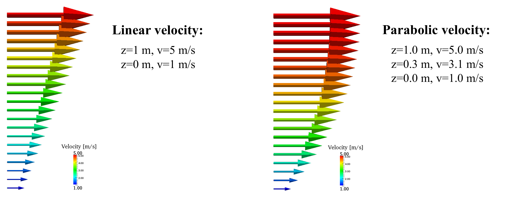
velpart initialises velocity from a previous PART file; densitypart similarly initialises density and can fit pressure with fitpress. The interpolation uses a minimum fluid-volume ratio, illustrated as 0.5, rather than blindly applying values at insufficiently populated points. The source's old input is Initial2D/Part_0300.bi4; its illustrated t=10 s field becomes the new case's t=0 state. The file and its metadata must actually exist and cover the region being initialised.
<velpart mkfluid="0">
<minratio v="0.5" comment="Minimum fluid ratio (volume) to apply interpolated values"/>
<partfile v="Part_0028.bi4" comment="PART file with input particle data"/>
</velpart>
<densitypart mkfluid="0">
<minratio v="0.5" comment="Minimum fluid ratio (volume) to apply interpolated values"/>
<partfile v="Part_0028.bi4" comment="PART file with input particle data"/>
<fitpress v="true" comment="Fits the pressure instead of density"/>
</densitypart>
The presentation also reconstructs the initial free surface from an earlier PART file: fill the candidate volume, select void, then redraw mkfluid="0" with a filterfluid maxratio="0.5" and the input file. This removes unwanted candidate particles according to the previous field. It can initialise a finer spacing from a coarser result; it is not equivalent to restarting a simulation with every state variable preserved.
The upper particle row is the new, finer initial configuration; the lower row is the previous simulation’s final free-surface profile at coarser resolution. The existing filtering explanation describes the reconstruction of this surface; its panel labels have been moved here from the image.
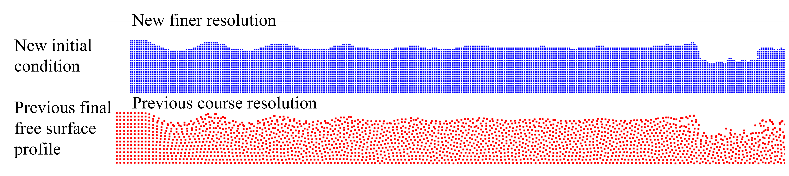
Loading initial fields from a previous simulation. The exact source example below belongs under case/casedef/initials. It preserves the source file path and comments; the earlier Part_0028.bi4 fragment is the separate current-reference example. mkfluid selects the fluid population, minratio sets the minimum fluid volume ratio for interpolation (the source states a default of 0.5), and partfile identifies the earlier binary particle data. The source describes fitpress as measuring particle pressure and using it to initialise density. Its densitypart paragraph also says “velocity” twice; this is an unresolved wording discrepancy, not a reason to change the source configuration. No execution or numerical equivalence is claimed.
<initials>
<velpart mkfluid="0">
<minratio v="0.5" comment="Minimum fluid ratio (volume) to apply interpolated values"/>
<partfile v="Initial2D/Part_0300.bi4" comment="PART file with input particle data"/>
</velpart>
<densitypart mkfluid="0">
<minratio v="0.5" comment="Minimum fluid ratio (volume) to apply interpolated values"/>
<fitpress v="true" comment="Fits the pressure instead of density"/>
<partfile v="Initial2D/Part_0300.bi4" comment="PART file with input particle data"/>
</densitypart>
</initials>
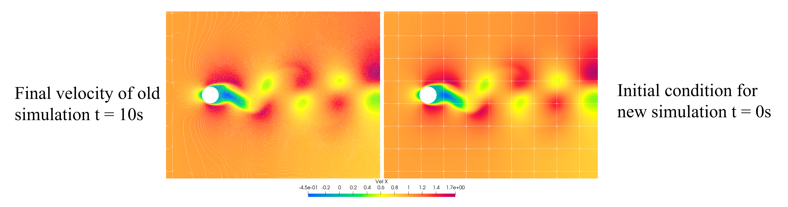
Moving generated particles before execution¶
Initial move and rotateaxis act on the final generated particle positions. They differ from matrix operations that rotate a shape before sampling the lattice. The source rotates a box by 40 degrees: rotating the geometry first produces a stair-stepped low-resolution boundary, whereas rotating the already generated particles avoids that particular lattice-alignment effect. This changes the generated particle arrangement and must be chosen deliberately.
<rotateaxis mkbound="0" angle="45" anglesunits="degrees">
<axisp1 x="0" y="0" z="0"/>
<axisp2 x="0" y="1" z="0"/>
</rotateaxis>
Panels A and C use the same open-ended box, defined by boundary marker 2, origin (0.15, 0.04, 0) and size (0.05, 0.21, 0.04), with boxfill equal to all ^ top ^ bottom. For C, the following source initial rotation acts on the generated particles after drawing. Its 40-degree angle and axis are distinct from the separate 45-degree current-reference fragment above.
<initials>
<rotateaxis mkbound="2" angle="40" anglesunits="degrees">
<axisp1 x="0.15" y="0.145" z="0"/>
<axisp2 x="0.15" y="0.145" z="1"/>
</rotateaxis>
</initials>
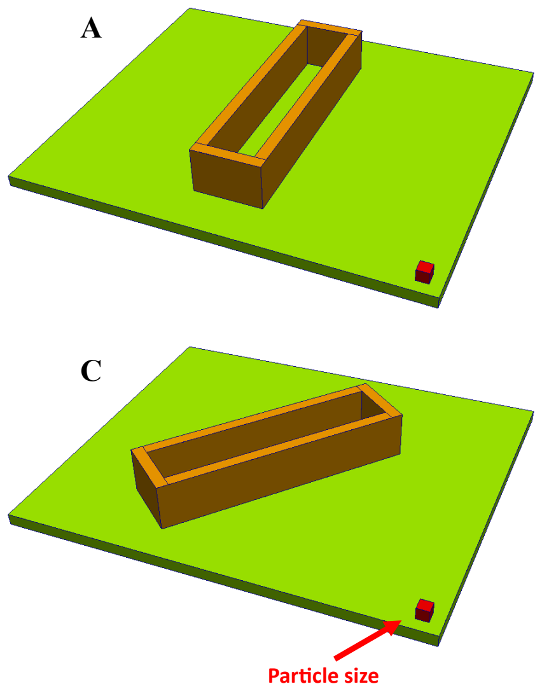
For panel A, the source draws the box directly. For B it first applies rotateline ang="40" about (0.15, 0.145, 0)–(0.15, 0.145, 1), draws that same box, and calls matrixreset. Both fragments belong in geometry/commands/mainlist; the coarse lattice is deliberately retained in the illustration.
<!-- A: draw the box directly -->
<setmkbound mk="2"/>
<drawbox>
<boxfill>all ^ top ^ bottom</boxfill>
<point x="0.15" y="0.04" z="0"/>
<size x="0.05" y="0.21" z="0.04"/>
</drawbox>
<!-- B: independent alternative, rotate geometry before drawing -->
<rotateline ang="40">
<point x="0.15" y="0.145" z="0"/>
<point x="0.15" y="0.145" z="1"/>
</rotateline>
<setmkbound mk="2"/>
<drawbox>
<boxfill>all ^ top ^ bottom</boxfill>
<point x="0.15" y="0.04" z="0"/>
<size x="0.05" y="0.21" z="0.04"/>
</drawbox>
<matrixreset/>
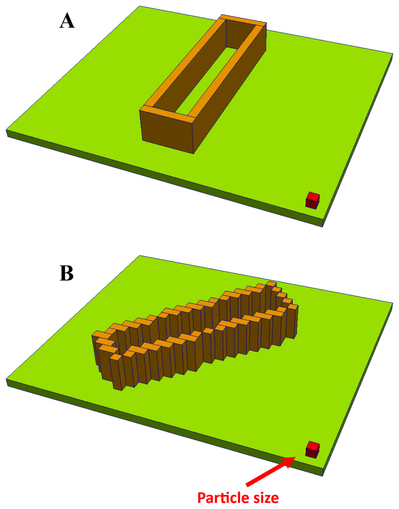
Floating bodies and material properties¶
A casedef/floatings/floating entry identifies a rigid floating body by mkbound. Its density or total mass must be consistent with the intended object. The presentation describes density (rhopbody), relative weight and total mass as alternative ways to characterise a body. For the current format, use the explicitly documented rhopbody attribute or massbody child shown below. Do not supply conflicting mass and density definitions or assume that a historical relative-weight value is a mass in kilograms.
GenCase can calculate the centre of gravity and inertia, or the user can specify them. inertia supplies diagonal terms; inertiafull supplies the full matrix. The source defines inertia about axes parallel to the reference coordinate system and through the body's centre. Initial translational velocity uses m/s and initial angular velocity rad/s.
<floating mkbound="5" property="Material_2">
<massbody value="1.3"/>
<inertiafull>
<values v11="11" v12="0" v13="0"/>
<values v21="0" v22="22" v23="0"/>
<values v31="0" v32="0" v33="33"/>
</inertiafull>
</floating>
<floating mkbound="7" rhopbody="1500">
<linearvelini x="1" y="3" z="2" units_comment="m/s"/>
<angularvelini x="0.2" y="0.4" z="0.6" units_comment="rad/s"/>
</floating>
translationDOF controls surge, sway and heave along X, Y and Z; rotationDOF controls roll, pitch and yaw about them. Zero restricts the selected degree of freedom and one permits it. Do not confuse these constraints with a prescribed motion history or assume they define an arbitrary mechanical joint.
<floating mkbound="6" rhopbody="1500">
<translationDOF x="0" y="0" z="1" comment="Use 0 to restrict Degrees Of Freedon for translation (default=(1,1,1))"/>
<rotationDOF x="0" y="1" z="0" comment="Use 0 to restrict Degrees Of Freedon for rotation (default=(1,1,1))"/>
</floating>
Properties linked to markers¶
casedef/properties defines named property groups, which can contain scalar attributes, text and child values. links/link assigns one or more groups to boundary or fluid markers, including lists and ranges. A + combines groups, as in the source material_2+data_x assignment to boundary markers 1, 3, 4, 5 and 6. A floating definition can also name its property directly.
propertyfile loads properties from an external XML file and path identifies the section in that file. The source example uses run/ftdata_ext.xml with case.materials. GenCase copies the resolved associations to execution/particles/properties, allowing the solver to obtain properties for each population. A generated begin/count range is metadata about actual particles, not a portable specification of another geometry.
For DEM contact, the source's Floating_Materials.xml illustration supplies Young's modulus, Poisson ratio, restitution and kinetic friction. Its example has Young's modulus 210000000000 N/m², Poisson ratio 0.30, restitution 0.80 and friction 0.45. A local userdef01 overrides the restitution coefficient to 0.70 and combines with steel; this is an explicit material choice, not a default for all steel objects. DEM and Chrono contact configurations are separate mechanisms.
<properties>
<links>
<link mkbound="0,2-3" property="Material_1"/>
<link mkbound="4,2" property="Material_2"/>
<link mkfluid="1" property="ExtraData+Material_3"/>
</links>
<propertyfile file="directory/data_external.xml" path="case.properties"/>
<property name="Material_1" color="black" density="0.0012" alpha="0.5">
<color2 r="20" g="120" b="220"/>
<poshole x="1.5" y="3.5" z="4.2"/>
<other value="125"/>
</property>
<property name="Material_2" color="blue" xdensity="0.99">
<poscen x="1.5" y="3.5"/>
<more val="99"/>
</property>
<property name="Material_3" var="87" modif="yes">
<poss xyz="39.65" yz="27.48"/>
</property>
<property name="ExtraData" coef="0.895" texture="milk"/>
</properties>
The presentation identifies JSpaceParts as the internal object used to retrieve properties assigned to particle blocks. This explains why input associations in casedef/properties are resolved into execution/particles/properties; it is not an additional XML element to insert. Its sample material_1 has weight 1.35 and text other="pepe", while material_2 contains a mass value 4728.78 and centre (4.99, 5, 7.03). These illustrate scalar/text/nested property data rather than automatic material defaults; generated begin/count values must not be copied to another geometry.
Prescribed boundary motion¶
Motion is defined under casedef/motion. An objreal ref="..." associates a movement with its boundary object. begin mov="..." start="..." selects an initial movement and starting time, with finish where used. Movement id values and next links form a sequence; repeated begin entries can combine movements. Nested objects introduce a motion hierarchy, so a child's trajectory includes the parent's motion as well as its own.
An abstract obj can group several objreal references under a shared movement. In the source rotational example, references 1, 3 and 4 share the mvrotace defined in their enclosing obj; reference 5 has a separate mvcirace. The shared group and a child object with its own additional movement are distinct uses of the hierarchy.
For mvrect, a negative duration specifies an instantaneous transformation. Its displacement is the specified velocity multiplied by the magnitude of duration, rather than motion over an indefinite interval. This interpretation applies to mvrect; retain the surrounding object, begin entry and movement sequence.
The first source example alternates constant-velocity movements and pauses: movements of 0.6 s, pauses of 0.3 s and a final return at −1.8 m/s. A separate combined-motion example superposes X and Y histories. The hierarchical example moves boundary object 2 relative to the motion of object 1. These are different constructions, not interchangeable interpretations of a single velocity.
<objreal ref="11">
<begin mov="1" start="0.01" finish="2"/>
<mvrect id="1" duration="0.5" next="2">
<vel x="0" y="1" z="-1" units_comment="m/s"/>
</mvrect>
<mvrect id="2" duration="0.5" next="1">
<vel x="0" y="-1" z="1" units_comment="m/s"/>
</mvrect>
</objreal>
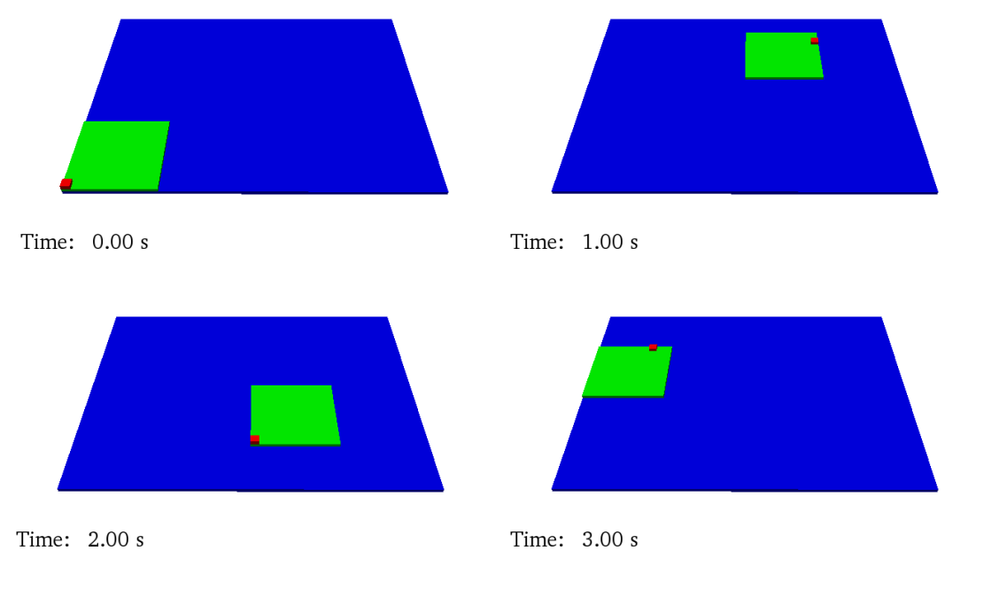
| Motion | Main inputs and interpretation |
|---|---|
mvrect |
Constant velocity vector vel; wait inserts a pause. |
mvrectace |
Initial velocity velini where specified, and acceleration vector ace. |
mvrot |
Angular velocity vel ang, with axis points axisp1 and axisp2. |
mvrotace |
Angular acceleration ace ang, initial angular velocity where specified, and axis. |
mvcir / mvcirace |
Circular displacement of a reference point around an axis; distinguish it from rotation of the body about itself. |
mvrectsinu |
Vector frequency, amplitude and phase for sinusoidal translation. |
mvrotsinu |
Scalar frequency, angular amplitude, phase and rotation axis. |
mvcirsinu |
Sinusoidal circular motion with a reference point and axis. |
Use anglesunits for angular quantities when the element provides it. Frequencies are in inverse seconds, translational amplitudes in metres and angular amplitudes in the selected angular unit. The source contrasts 20 and 240 degrees/s in its rotation example; its accelerated rotational/circular example uses initial angular velocity −50 degrees/s and angular acceleration 9 degrees/s². These values are example inputs, not stability recommendations.
<mvrectace id="30" duration="1">
<velini x="1" y="0" z="0" units_comment="m/s"/>
<ace x="0.1" y="0" z="0" units_comment="m/s^2"/>
</mvrectace>
<mvrotace id="60" duration="1" anglesunits="degrees">
<ace ang="90" units_comment="degrees/s^2"/>
<velini ang="180" units_comment="degrees/s"/>
<axisp1 x="0" y="0" z="0"/>
<axisp2 x="0" y="0" z="1"/>
</mvrotace>
<mvrotsinu id="112" duration="1" anglesunits="degrees">
<freq v="1.5" units_comment="1/s"/>
<ampl v="180" units_comment="degrees"/>
<phase v="90" units_comment="degrees"/>
<axisp1 x="0" y="0" z="0"/>
<axisp2 x="0" y="0" z="1"/>
</mvrotsinu>
The six source snapshots illustrate Motion06, combining accelerated rotation (mvrotace) and accelerated circular motion (mvcirace). Their original times are 0, 5, 10, 15, 20 and 25 s.
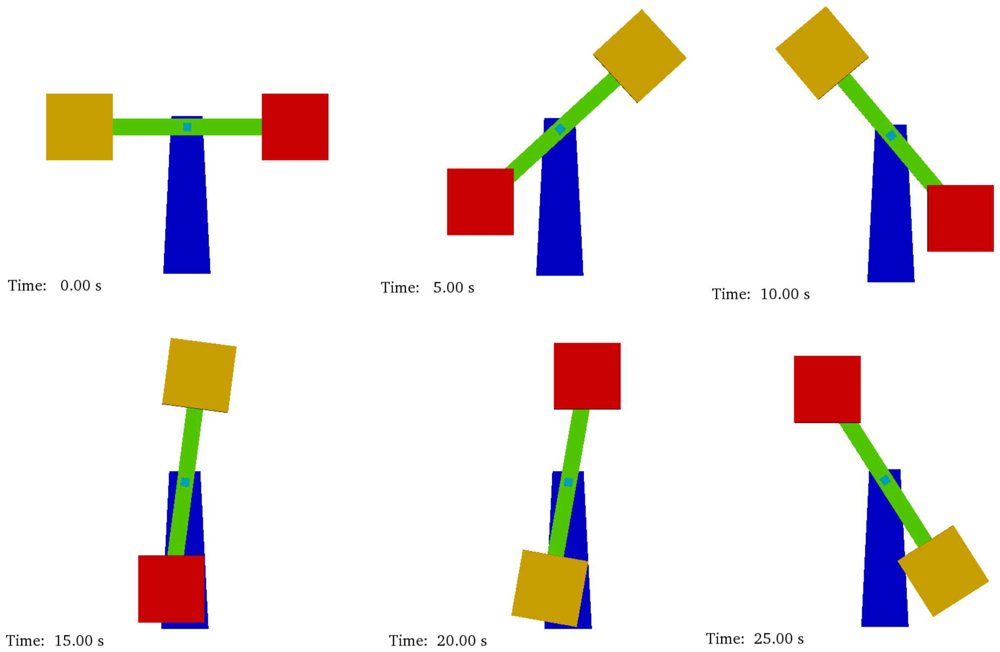
The source's numerical motion examples are independent configurations. Its combined translation starts the X history at 0 s (1 m/s for 2 s, then −2 m/s for 1 s) and the Y history at 0.5 s (±1 m/s in 1.3 s segments). Its accelerated translation begins at zero velocity with acceleration (2, 0, 0) m/s² for 1.411 s, followed by a 1 s segment starting at (2, 5, 0) m/s with acceleration (0, −10, 0) m/s². These histories must retain their own begin, duration, next and initial-velocity relationships; replacing them by a different current-reference example does not reproduce the same trajectory.
Motion from external files¶
External motion files must use the specified time and data columns. Column indices start at zero: fieldtime="0" selects the first column. fields is the number of columns, while fieldx, fieldy and fieldz select translational position components.
The current template and motion reader use mvrectfile for translational files; mvpredef and mvfile are recognised aliases. mvrotfile reads a rotational history about an axis. For three-angle rotation, the current spelling is mvrotadvfile, with fieldang1, fieldang2, fieldang3, center, intrinsic and axes. The historical mvadvrotfile spelling in the presentation is not the current template name.
mvpathfile combines translational and three-angle histories. Its movecenter option controls whether the rotation centre moves with the object. Keep axis order, intrinsic/extrinsic convention, angle units and column assignments consistent with the data producer. A filename alone does not establish these conventions.
<mvrectfile id="134" duration="1">
<file name="filemotionT_X_Y_Z.dat" fields="4" fieldtime="0" fieldx="1" fieldy="2" fieldz="3"/>
</mvrectfile>
<mvrotfile id="138" duration="1" anglesunits="degrees">
<file name="fileRotationT_Deg.dat"/>
<axisp1 x="0" y="-1" z="0"/>
<axisp2 x="0" y="1" z="0"/>
</mvrotfile>
<mvrotadvfile id="140" duration="1" anglesunits="degrees">
<file name="fileEulerRotationXYZ_Deg.dat" fields="4" fieldtime="0" fieldang1="1" fieldang2="2" fieldang3="3"/>
<center x="0.1" y="0.2" z="3"/>
<intrinsic value="false"/>
<axes value="XYZ"/>
</mvrotadvfile>
<mvpathfile id="142" duration="1" anglesunits="degrees">
<file name="filePath_Deg.dat" fields="7" fieldtime="0" fieldx="1" fieldy="2" fieldz="3" fieldang1="4" fieldang2="5" fieldang3="6"/>
<center x="0" y="0" z="0"/>
<movecenter value="true"/>
<intrinsic value="false"/>
<axes value="XYZ"/>
</mvpathfile>
Special execution features¶
execution/special contains feature-specific configurations. It is independent of the main parameter list: for example, defining a wave paddle does not replace the requirement to generate its moving boundary particles, and defining a gauge does not prescribe a boundary condition. Configure only the features used by the case.
The general source introduces wave paddles, absorption, multi-layer pistons, relaxation zones, gauges, accelerations, time-step diagnostics, variable saving intervals and particle-output filters. Other features have their own guides and prerequisites, listed at the end of this page.
The source overview also lists special/initialize, an execution-stage particle-initialisation framework. Its distributed reference presents simple fluid-velocity and boundary-normal examples for users developing additional options, and directs the full initialisation configuration to casedef/initials and casedef/normals. It is distinct from those GenCase input sections.
Regular and irregular wave paddles¶
A paddle is a population of moving boundary particles. Associate it with an objreal motion entry and a null movement; the wave-generation configuration supplies its displacement. The source couples motion reference 27 with wave-paddle mkbound=27. Use the association required by the actual generated marker metadata, rather than copying an unrelated object's number.
Under special/wavepaddles, piston generates regular waves by translation and flap generates them by rotation. The corresponding irregular-wave elements are piston_spectrum and flap_spectrum. The following regular-piston fragment is taken from the distributed format reference, with its own illustrative dimensions.
<piston>
<mkbound value="10" comment="Mk-Bound of selected particles" />
<start value="0" comment="Start time (default=0)" />
<duration value="0" comment="Movement duration, Zero is the end of simulation (default=0)" />
<depth value="30" comment="Water depth (default=0)" />
<pistondir x="1" y="0" z="0" comment="Movement direction (default=(1,0,0))" />
<waveorder value="1" comment="Order wave generation 1:1st order, 2:2nd order (default=1)" />
<waveheight value="1.5" comment="Wave height" />
<waveperiod value="9.5" comment="Wave period" />
<gainstroke value="1" comment="Gain factor to amplify/reduce the paddle stroke (default=1)" />
<phase value="0" comment="Initial wave phase in function of PI (default=0)" />
<ramp value="0" comment="Periods of ramp (default=0)" />
<_usefiledata file="PistonFile_WallRegLong.csv" swlmod="-0.266916" comment="Uses displacement and elevation from file" />
<!-- Each <savemotion> line generates a different file with paddle displacement and theoretical elevation and velocity. -->
<!-- In <savemotion> when "periods" is not defined, it is automatically calculated accoding to simulation time. -->
<!-- In <savemotion> when "periodsteps" is not defined, it is automatically calculated accoding to TimeOut of simulation. -->
<savemotion xpos="0" zpos="-0.5" comment="Saves motion data. xpos and zpos are optional. zpos=-depth of the measuring point" />
<savemotion periods="24" periodsteps="20" xpos="2" zpos="-0.5" comment="Saves motion data. xpos and zpos are optional. zpos=-depth of the measuring point" />
</piston>
| Setting | Meaning |
|---|---|
mkbound |
Boundary population assigned to the paddle. |
start, duration |
Start and motion duration; the reference uses duration zero to continue to the simulation end. |
depth |
Water depth at the paddle. |
pistondir |
Translation direction for a piston. |
waveheight, waveperiod |
Height H and period T for regular waves; significant height Hs and peak period Tp for irregular waves. |
waveorder |
First- or second-order generation where provided by the selected method. The source discusses superharmonic corrections for regular waves and bound long-wave/subharmonic effects for irregular waves. |
gainstroke |
Multiplier of the calculated paddle displacement, rather than a replacement for H, T or depth. |
phase |
Initial phase in units of π where defined. |
ramp |
Initial smoothing duration in wave periods for the regular configuration. |
ramptime |
Initial ramp time for irregular generation. |
savemotion |
Save prescribed displacement and theoretical elevation/velocity at optional xpos and zpos. The source uses negative zpos for depth below still water. |
When regular-piston usefiledata is active, swlmod is added to each elevation value read from the file, in the same vertical length unit (metres in the supplied SI convention). The displacement column is separately rebased to its initial value. The _usefiledata entry above remains inactive.
Repeated savemotion entries can request different output series. Regular examples specify periods and periodsteps; irregular examples use total time and timedt. These are theoretical/prescribed signals, separate from measured solver results.
For irregular waves, spectrum selects jonswap or pierson-moskowitz. peakcoef is the JONSWAP peak-enhancement coefficient, illustrated as 3.3. waves gives the number of components used to discretise the spectrum. The source examples use 3 components to illustrate the method; the reference documents 50 as the default. A three-component teaching illustration is not a general resolution recommendation.
discretization selects regular, random, stretched or cosstretched. randomseed and the selected initial portion of the series affect repeatability. serieini, including autofit where supported, selects the initial time in the irregular train. saveserie, saveseriewaves and calcserielength provide series diagnostics. Their optional presence does not replace the actual paddle definition.
<flap_spectrum>
<mkbound value="12" comment="Mk-Bound of selected particles" />
<depth value="50" comment="Water depth (default=0)" />
<variabledraft value="0" comment="Position of the wavemaker hinge with respect to the bottom (above the bottom >0; below the bottom <0) (default=0)" />
<start value="0" comment="Start time (default=0)" />
<duration value="0" comment="Movement duration, Zero is the end of simulation (default=0)" />
<flapaxis0 x="3" y="0" z="0" comment="Point 0 of axis rotation" />
<flapaxis1 x="3" y="1" z="0" comment="Point 1 of axis rotation" />
<spectrum value="jonswap" comment="Spectrum type: jonswap, pierson-moskowitz" />
<discretization value="stretched" comment="Spectrum discretization: regular,random,stretched,cosstretched (default=stretched)" />
<waveheight value="1.5" comment="Significant Wave Height (Hs)" />
<waveperiod value="9.5" comment="Peak Period" />
<gainstroke value="1" comment="Gain factor to amplify/reduce the paddle stroke (default=1)" />
<peakcoef value="3.3" comment="Peak enhancement coefficient for JONSWAP spectrum (default=3.3)" />
<waves value="3" comment="Number of waves to create irregular waves (default=50)" />
<randomseed value="2" comment="Random seed to initialize a pseudorandom number generator" />
<serieini value="0" autofit="true" comment="Initial time in irregular wave serie (default=0 and autofit=false)" />
<ramptime value="0" comment="Time of ramp (default=0)" />
<saveserie timemin="0" timemax="300" timedt="0.05" xpos="0" comment="Saves serie data (optional)" />
<saveseriewaves timemin="0" timemax="1000" xpos="0" comment="Saves serie heights" />
<calcserielength timemax="1000" comment="Calculates serie length (optional)" />
<!-- Each <savemotion> line generates a different file with paddle displacement and theoretical elevation and velocity. -->
<!-- In <savemotion> when "time" is not defined, it is automatically calculated accoding to simulation time. -->
<!-- In <savemotion> when "timedt" is not defined, it is automatically calculated accoding to TimeOut of simulation. -->
<savemotion xpos="0.1" zpos="-0.5" comment="Saves motion data. xpos and zpos are optional. zpos=-depth of the measuring point" />
<savemotion time="10" timedt="0.02" xpos="0.1" zpos="-0.5" comment="Saves motion data. xpos and zpos are optional. zpos=-depth of the measuring point" />
</flap_spectrum>
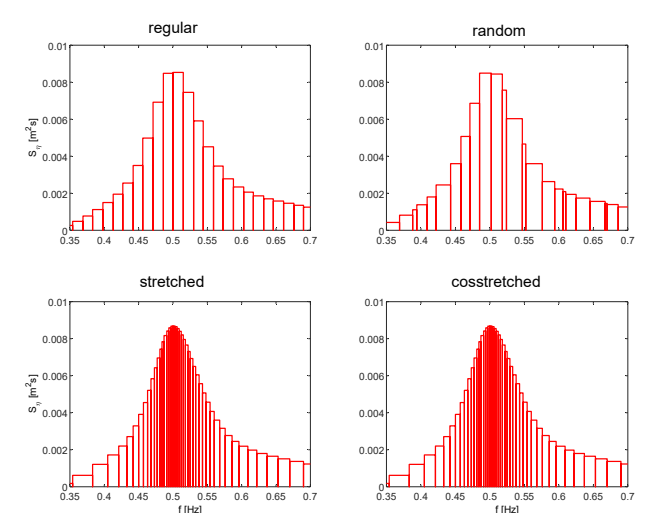
A flap needs its rotation axis, specified by flapaxis0 and flapaxis1, and the hinge-position configuration variabledraft. Define and inspect the actual axis coordinates and water depth. A flap and a piston have different kinematics; do not reuse the piston-spectrum element for a flap merely because an older illustration carries that tag.
The source explanation says that variabledraft is the distance of the hinge above or below the bottom, with an above-bottom value below zero and a below-bottom value above zero; its diagram illustrates a hinge below the bottom. The current reference’s variabledraft comments above state the opposite sign convention (above >0, below <0). This source/reference discrepancy remains unresolved. The figure’s original sign annotation is retained; neither the examples nor the hinge geometry have been changed.
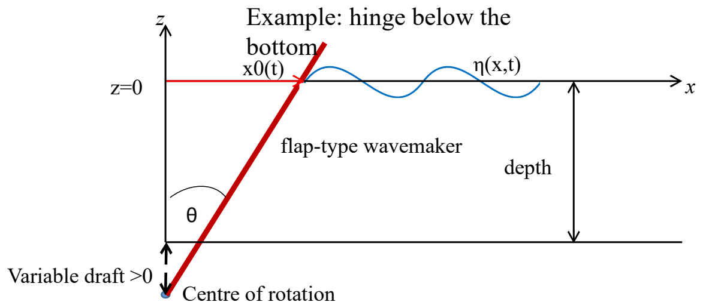
The source illustrates selecting the initial portion of an irregular train using a generated series file named WavePaddle_mkb0010_Serie.csv. That is a source example filename, not a universal filename for every paddle: inspect the generated series associated with the actual marker before choosing serieini. The selected seed, component discretisation and initial series time jointly affect the reproduced signal.
The following flap fragment preserves the current distributed reference's illustrative values and comments. It belongs under case/execution/special/wavepaddles; it is not a complete case. Marker selections, water level, axis geometry and input series must match the receiving case.
<flap>
<mkbound value="11" comment="Mk-Bound of selected particles" />
<start value="2" comment="Start time (default=0)" />
<duration value="0" comment="Movement duration, Zero is the end of simulation (default=0)" />
<depth value="1.4" comment="Water depth (default=0)" />
<variabledraft value="0" comment="Position of the wavemaker hinge with respect to the bottom (above the bottom >0; below the bottom <0) (default=0)" />
<flapaxis0 x="3" y="0" z="0" comment="Point 0 of axis rotation" />
<flapaxis1 x="3" y="1" z="0" comment="Point 1 of axis rotation" />
<waveheight value="0.1" comment="Wave height" />
<waveperiod value="5" comment="Wave period" />
<gainstroke value="1" comment="Gain factor to amplify/reduce the paddle stroke (default=1)" />
<phase value="1" comment="Initial wave phase in function of PI (default=0)" />
<ramp value="3" comment="Periods of ramp (default=0)" />
<!-- Each <savemotion> line generates a different file with paddle displacement and theoretical elevation and velocity. -->
<!-- In <savemotion> when "periods" is not defined, it is automatically calculated accoding to simulation time. -->
<!-- In <savemotion> when "periodsteps" is not defined, it is automatically calculated accoding to TimeOut of simulation. -->
<savemotion xpos="0" zpos="-0.5" comment="Saves motion data. xpos and zpos are optional. zpos=-depth of the measuring point" />
<savemotion periods="24" periodsteps="20" xpos="2" zpos="-0.5" comment="Saves motion data. xpos and zpos are optional. zpos=-depth of the measuring point" />
</flap>
The following piston_spectrum fragment preserves the current distributed reference's illustrative values and comments. It belongs under case/execution/special/wavepaddles; it is not a complete case. Marker selections, water level, axis geometry and input series must match the receiving case.
<piston_spectrum>
<mkbound value="12" comment="Mk-Bound of selected particles" />
<depth value="50" comment="Water depth (default=0)" />
<start value="0" comment="Start time (default=0)" />
<duration value="0" comment="Movement duration, Zero is the end of simulation (default=0)" />
<pistondir x="1" y="0" z="0" comment="Movement direction (default=(1,0,0))" />
<spectrum value="jonswap" comment="Spectrum type: jonswap,pierson-moskowitz" />
<discretization value="stretched" comment="Spectrum discretization: regular,random,stretched,cosstretched (default=stretched)" />
<waveorder value="1" comment="Order wave generation 1:1st order, 2:2nd order (default=1)" />
<waveheight value="1.5" comment="Significant Wave Height (Hs)" />
<waveperiod value="9.5" comment="Peak Period" />
<gainstroke value="1" comment="Gain factor to amplify/reduce the paddle stroke (default=1)" />
<peakcoef value="3.3" comment="Peak enhancement coefficient for JONSWAP spectrum (default=3.3)" />
<waves value="3" comment="Number of waves to create irregular waves (default=50)" />
<randomseed value="2" comment="Random seed to initialize a pseudorandom number generator" />
<serieini value="0" autofit="true" comment="Initial time in irregular wave serie (default=0 and autofit=false)" />
<ramptime value="0" comment="Time of ramp (default=0)" />
<saveserie timemin="0" timemax="300" timedt="0.05" xpos="0" comment="Saves serie data (optional)" />
<saveseriewaves timemin="0" timemax="1000" xpos="0" comment="Saves serie heights" />
<calcserielength timemax="1000" comment="Calculates serie length (optional)" />
<!-- Each <savemotion> line generates a different file with paddle displacement and theoretical elevation and velocity. -->
<!-- In <savemotion> when "time" is not defined, it is automatically calculated accoding to simulation time. -->
<!-- In <savemotion> when "timedt" is not defined, it is automatically calculated accoding to TimeOut of simulation. -->
<savemotion xpos="0.1" zpos="-0.5" comment="Saves motion data. xpos and zpos are optional. zpos=-depth of the measuring point" />
<savemotion time="10" timedt="0.02" xpos="0.1" zpos="-0.5" comment="Saves motion data. xpos and zpos are optional. zpos=-depth of the measuring point" />
</piston_spectrum>
Single and multiple solitary waves¶
piston_solitary supports the source's Rayleigh/Serre, Boussinesq/Goring and KdV/Clamond–Germain generation choices, identified by theory values 1, 2 and 3. The distributed reference documents theory 2 as the default. Specify the actual height, depth, direction and movement duration coefficient.
The source's first solitary wave has depth 0.4 m and height 0.12 m. Its three-wave illustration adds height 0.18 m and 0.24 m waves with startcoef2=0.6 and startcoef3=0.6. waves is the number of solitary waves. Numbered startcoef, durationcoef and waveheight elements apply to subsequent waves, with the inheritance rules documented in the reference. savemotion writes the imposed movement and theoretical elevation; its optional xpos selects the elevation point.
<piston_solitary>
<mkbound value="10" comment="Mk-Bound of selected particles" />
<theory value="1" comment="Theory of generation 1:Rayleigh (Serre 1953), 2: Boussinesq (Goring 1978) 3: KdV (Clamond and Germain 1999) (def=2)" />
<start value="0" comment="Start time (def=0)" />
<depth value="0.14" comment="Water depth" />
<pistondir x="1" y="0" z="0" comment="Movement direction (def=(1,0,0))" />
<durationcoef value="1" comment="Coefficient of movement duration (def=1)" />
<waveheight value="0.05" comment="Wave height" />
<waves value="3" comment="Number of solitary waves (def=1)" />
<startcoef2 value="0.8" comment="Defines start of next wave according to period of previous wave. (def=1)" />
<_durationcoef2 value="1.1" comment="Coefficient of movement duration for 2nd wave (def=value of previous wave)" />
<waveheight2 value="0.07" comment="Wave height for 2nd wave (def=value of previous wave" />
<startcoef3 value="0.7" comment="Defines start of next wave according to period of previous wave. (def=value of previous wave)" />
<_durationcoef3 value="1.1" comment="Coefficient of movement duration for 3rd wave (def=value of previous wave)" />
<_waveheight3 value="0.05" comment="Wave height for 3rd wave (def=value of previous wave" />
<!-- Each <savemotion> line generates a different file with paddle displacement and theoretical elevation. -->
<!-- In <savemotion> when "time" is not defined, it is automatically calculated accoding to simulation time. -->
<!-- In <savemotion> when "timedt" is not defined, it is automatically calculated accoding to TimeOut of simulation. -->
<savemotion xpos="10" comment="Saves motion data. xpos is optional for elevation calculation" />
<savemotion time="16" timedt="0.02" xpos="18" comment="Saves motion data. xpos is optional for elevation calculation" />
</piston_solitary>
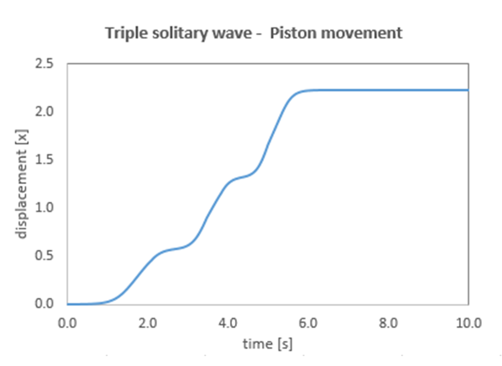
Active wave absorption¶
awas_zsurf adds feedback absorption to a regular or irregular piston moving in X+, as restricted by the distributed reference. It measures the free surface near the paddle and adjusts the motion. It is not the same as passive damping or relaxation-zone absorption.
| Setting | Interpretation |
|---|---|
startawas |
Start of feedback correction; the reference relates its default to start, ramp and wave period. |
swl |
Still-water surface Z coordinate in the case reference frame. |
elevation |
Order used for the theoretical elevation. |
gaugex |
X distance from piston to measurement: value in metres, or the documented alternative valueh or valuedp. Use one definition. |
gaugey, gaugezmin, gaugezmax |
Measurement location and vertical search limits; the lower point must lie in water. |
gaugedp |
Measurement spacing as a multiple of particle dp. |
savedata |
Diagnostic output: reference values 1 per PART, 2 more information, 3 per time step. |
limitace |
Limits corrective acceleration; zero disables that limit. |
correction |
Optional drift correction, using stroke, period and power-function coefficients. |
The source explains drift correction as compensation when displacement exceeds a configured multiple of the piston stroke, applied over the configured number of periods. It is not a replacement for correctly setting the still-water level.
<awas_zsurf>
<startawas value="0" comment="Time to start AWAS correction (default=start+ramp*waveperiod)" />
<swl value="0.266" comment="Still water level (free-surface water)" />
<elevation value="2" comment="Order wave to calculate elevation 1:1st order, 2:2nd order (default=2)" />
<gaugex value="0.05" comment="Position in X from piston to measure free-surface water (default=5*Dp)" />
<gaugey value="1" comment="Position in Y to measure free-surface water" />
<gaugezmin value="0.05" comment="Minimum position in Z to measure free-surface water, it must be in water (default=domain limits)" />
<gaugezmax value="0.5" comment="Maximum position in Z to measure free-surface water (default=domain limits)" />
<gaugedp value="0.25" comment="Resolution to measure free-surface water, it uses Dp*gaugedp (default=0.1)" />
<savedata value="1" comment="Saves CSV with information 1:by part, 2:more information, 3:by step (default=0)" />
<limitace value="2" comment="Factor to limit maximum value of acceleration, with 0 disabled (default=2)" />
<correction coefstroke="1.8" coefperiod="1" powerfunc="3" comment="Drift correction configuration (default=no applied)" />
</awas_zsurf>
Passive damping¶
Damping reduces particle velocity progressively in a configured region. limitmin and limitmax define the direction from minimum to maximum reduction. overlimit extends the maximum-reduction region; redumax scales the strength. factorxyz permits component-dependent damping, and an optional domain restricts the region. The current reference also supplies box and cylinder damping alternatives.
For the source plane-aligned example, the velocity update and reduction function are:
Here x is position along the damping direction, x0 and x1 are the limit positions, β is the reduction strength and Δt is the time step. For an oblique zone, interpret the direction using its defining points rather than applying the X-only illustration to another coordinate unchanged.
<dampingzone>
<limitmin x="4" y="0" z="0" comment="Location where minimum reduction is applied" />
<limitmax x="4.5" y="0" z="0" comment="Location where maximum reduction is applied" />
<overlimit value="1" comment="The scope of maximum reduction over limitmax (default=0)" />
<redumax value="10" comment="Maximum reduction in location limitmax (default=10)" />
<factorxyz x="1" y="1" z="1" comment="Application factor in components (default x=1,y=1,z=1)" />
<domain zmin="-1.2" zmax="0" comment="Box domain to apply damping (default=all domain)">
<point1 x="5" y="2" />
<point2 x="10" y="2" />
<point3 x="10" y="8" />
<point4 x="5" y="8" />
</domain>
</dampingzone>
The upper plot shows one X-direction damping zone from X=4 to 7 with an overlimit of 1, maximum reduction 10, and unit component factors. The lower plot combines two independent zones: the same 4-to-7 zone with overlimit 1, and a 1-to-0 zone with overlimit 0. These are source examples under case/execution/special, distinct from the earlier current-reference configuration.
<!-- Upper plot -->
<special>
<damping>
<dampingzone>
<limitmin x="4" y="0" z="0" comment="Location where minimum reduction is applied"/>
<limitmax x="7" y="0" z="0" comment="Location where maximum reduction is applied"/>
<overlimit value="1" comment="The scope of maximum reduction over limitmax (default=0)"/>
<redumax value="10" comment="Maximum reduction in location limitmax (default=10)"/>
<factorxyz x="1" y="1" z="1" comment="Application factor in components (default x=1,y=1,z=1)"/>
</dampingzone>
</damping>
</special>
<!-- Lower plot: alternative -->
<special>
<damping>
<dampingzone>
<limitmin x="4" y="0" z="0" comment="Location where minimum reduction is applied"/>
<limitmax x="7" y="0" z="0" comment="Location where maximum reduction is applied"/>
<overlimit value="1" comment="The scope of maximum reduction over limitmax (default=0)"/>
</dampingzone>
<dampingzone>
<limitmin x="1" y="0" z="0" comment="Location where minimum reduction is applied"/>
<limitmax x="0" y="0" z="0" comment="Location where maximum reduction is applied"/>
<overlimit value="0" comment="The scope of maximum reduction over limitmax (default=0)"/>
</dampingzone>
</damping>
</special>
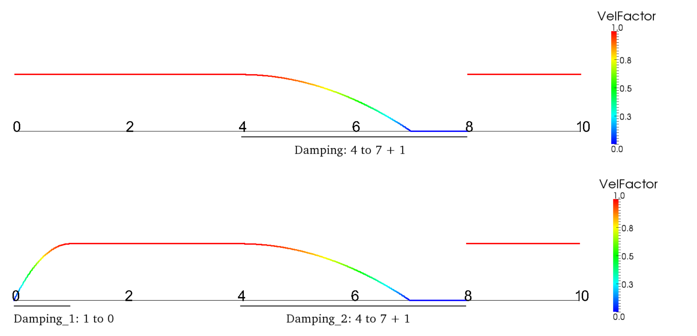
The upper source plot damps along the oblique direction from (5,5,0) to (8,8,0), with overlimit 1. The lower plot damps from (6,0,0) to (10,0,0) with no overlimit and restricts the operation to the footprint (5,2), (10,2), (10,8), (5,8), between Z=0 and Z=10. In the old screenshot all four footprint children are named point; the current reference above names them point1–point4. Those spellings are recorded without asserting automatic compatibility. The lower source rows are retained as editable data, and the upper fragment uses the currently documented limit elements.
| Lower source row | Original attributes / comment |
|---|---|
limitmin |
x="6" y="0" z="0"; “Location where minimum reduction is applied” |
limitmax |
x="10" y="0" z="0"; “Location where maximum reduction is applied” |
overlimit |
value="0"; “The scope of maximum reduction over limitmax (default=0)” |
domain |
zmin="0" zmax="10"; “Box domain to apply damping (default=all domain)” |
point, in order |
(5,2), (10,2), (10,8), (5,8) |
<damping>
<dampingzone>
<limitmin x="5" y="5" z="0" comment="Location where minimum reduction is applied"/>
<limitmax x="8" y="8" z="0" comment="Location where maximum reduction is applied"/>
<overlimit value="1" comment="The scope of maximum reduction over limitmax (default=0)"/>
</dampingzone>
</damping>
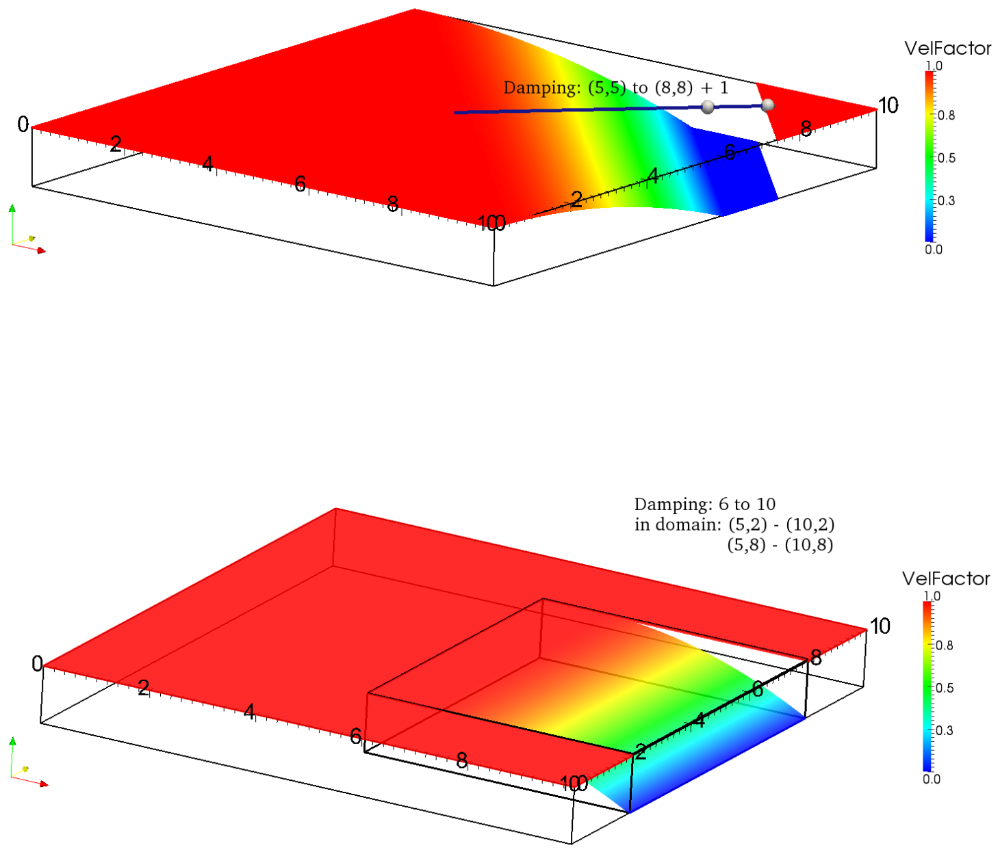
Multi-layer pistons and external coupling¶
Multi-layer pistons impose different horizontal velocities on boundary layers using externally supplied data. The source describes one-way offline coupling: the external wave-propagation model provides the velocities; this arrangement does not imply a simultaneous two-way exchange.
mlayerpistons/piston1d specifies the paddle marker, filevelx, vertical offset incz, time offset timedataini and smoothing level. The CSV needs time, the Z positions of layers and their velocities. Align the still-water reference of the two models using the intended vertical offset. Smoothing acts along the layers and should not be confused with a different physical velocity profile. The distributed reference also provides a piston2d arrangement with Y-positioned datasets and separate Y/Z smoothing.
<piston1d>
<mkbound value="10" comment="Mk-Bound of selected particles" />
<filevelx value="AwaReg1L_velx_x10_y00.csv" comment="File name with X velocity" />
<incz value="0" comment="Z offset (def=0)" />
<timedataini value="0" comment="Time offset (def=0)" />
<smooth value="5" comment="Smooth motion level (def=0)" />
</piston1d>
In the source explanation, smooth controls the number of neighbouring particles used for a smoothing average along Z, reducing discontinuities between the imposed layer velocities. It is a spatial smoothing choice, distinct from the CSV time coordinate or the offset between the two still-water reference systems.
Relaxation zones¶
Relaxation zones impose or blend a target velocity field over a finite width of fluid, rather than moving a solid paddle. Their center and width define the zone, coefdir selects component coefficients, coefdt scales the time-dependent application and function psi/beta supplies the weighting-function parameters. Drift correction is a separate option derived from the wave formulation, not an automatic guarantee of zero mean flow.
| Current element | Target field and main inputs |
|---|---|
rzwaves_regular |
Regular-wave field: height, period, order, depth, swl, phase and ramp. |
rzwaves_spectrum |
Irregular field: spectrum, discretisation, Hs, Tp, component count, seed and initial series time. |
rzwaves_external_1d |
External velocity files, file index/count, optional vertical velocity, coordinate shift, vertical data spacing and smoothing. |
rz_uniform |
Uniform or time-dependent velocity in a domainbox. |
rz_meshdata |
Current reference alternative using sampled mesh data; distinct from the older one-dimensional external-file arrangement. |
The source regular-wave example uses H=0.16 m, T=2 s, depth=swl=0.7 m and width=0.2 m. Its irregular example uses 1024 components, rather than the three-component paddle illustration. Those configurations must not be merged into a single supposedly equivalent wave field.
<rzwaves_regular>
<start value="0" comment="Start time (default=0)" />
<duration value="0" comment="Movement duration, Zero is the end of simulation (default=0)" />
<waveorder value="2" comment="Order wave generation 1:1st order, 2:2nd order (default=1)" />
<waveheight value="0.16" comment="Wave height" />
<waveperiod value="2" comment="Wave period" />
<depth value="0.7" comment="Water depth for wave generation" />
<swl value="0.7" comment="Still water level (free-surface)" />
<center x="0" y="0" z="0" comment="Central point of application" />
<width value="0.2" comment="Width for generation" />
<phase value="0" comment="Initial wave phase in function of PI (default=0)" />
<ramp value="1" comment="Periods of ramp (default=0)" />
<savemotion periods="24" periodsteps="20" xpos="13" zpos="-0.5" comment="Saves motion data. xpos and zpos are optional. zpos=-depth of the measuring point" />
<coefdir x="1" y="0" z="0" comment="Coefficients for each direction (default=(1,0,0))" />
<coefdt value="1000" comment="Multiplies by dt value in the calculation (using 0 is not applied) (default=1000)" />
<function psi="0.9" beta="1" comment="Coefficients in funtion for velocity (def. psi=0.9, beta=1)" />
<driftcorrection value="1.0" comment="Coefficient of drift correction applied in velocity X. 0:Disabled, 1:Full correction (def=0)" />
</rzwaves_regular>
For offline coupling, filesvel is the base name of the velocity files and filesvelx initial/count selects their range. movedata changes the data coordinates; dpz specifies vertical spacing, smooth the smoothing level and usevelz whether vertical velocities are included. Depth and swl are required when using the associated drift correction. driftinitialramp delays that correction. The presentation describes producing the external velocity CSVs from SWASH output with ReadSwash2; the actual external files and their time coverage remain prerequisites.
For a uniform zone, the current element is rz_uniform, with a domainbox containing point, size, direction and optional rotation axis. A velocitytimes series takes precedence over the constant velocity entry. Its source sequence is (time, velocity): (0,0), (2,0.5), (4,0), (5,0), (7,0.4), using seconds and m/s. The reference's coefdt=1000 and psi=0.9, beta=1 are documented configuration values; their presence must not be confused with the wave-paddle settings.
<rzwaves_external_1d>
<start value="0" comment="Start time (def=0)" />
<duration value="0" comment="Movement duration, Zero is the end of simulation (def=0)" />
<depth value="0.7" comment="Water depth. It is necessary for drift correction (def=0)" />
<swl value="0.7" comment="Still water level (free-surface). It is necessary for drift correction (def=0)" />
<filesvel value="SgWave4i3L_corr" comment="Main name of files with velocity to use" />
<filesvelx initial="2" count="5" comment="First file and count to use" />
<usevelz value="false" comment="Use velocity in Z or not (def=false)" />
<movedata x="1" y="0" z="0" comment="Movement of data in CSV files" />
<dpz valuedp="1" comment="Distance between key points in Z (def=2)" />
<smooth value="5" comment="Smooth motion level (def=0)" />
<center x="0" y="0" z="0" comment="Central point of application" />
<width value="0.2" comment="Width for generation" />
<coefdir x="1" y="0" z="0" comment="Coefficients for each direction (default=(1,0,0))" />
<coefdt value="1000" comment="Multiplies by dt value in the calculation (using 0 is not applied) (default=1000)" />
<function psi="0.9" beta="1" comment="Coefficients in funtion for velocity (def. psi=0.9, beta=1)" />
<driftcorrection value="1.0" comment="Coefficient of drift correction applied in velocity X. 0:Disabled, 1:Full correction (def=0)" />
<driftinitialramp value="10" comment="Ignore waves from external data in initial seconds (def=0)" />
</rzwaves_external_1d>
<rz_uniform>
<start value="0" comment="Start time (default=0)" />
<duration value="0" comment="Duration, Zero is the end of simulation (default=0)" />
<domainbox>
<point x="0.3" y="-0.05" z="0" />
<size x="0.4" y="0.1" z="0.2" />
<direction x="-1" y="0" z="0" />
<rotateaxis angle="-45" anglesunits="degrees">
<point1 x="0.3" y="0" z="0" />
<point2 x="0.3" y="1" z="0" />
</rotateaxis>
</domainbox>
<velocity value="0.3" comment="Velocity to impose (it is ignored when velocitytimes is defined)" />
<velocitytimes comment="Uniform velocity in time">
<timevalue time="0.0" v="0" />
<timevalue time="2.0" v="0.5" />
<timevalue time="4.0" v="0" />
<timevalue time="5.0" v="0" />
<timevalue time="7.0" v="0.4" />
</velocitytimes>
<coefdt value="1000" comment="Multiplies by dt value in the calculation (using 0 is not applied) (default=1000)" />
<function psi="0.9" beta="1" comment="Coefficients in funtion for velocity (def. psi=0.9, beta=1)" />
</rz_uniform>
The source derives its wave drift correction from Stokes' second-order theory. driftcorrection weights that correction and driftinitialramp delays its application in the external-data configuration; neither is a replacement for the supplied wave field. Its external-file naming example is SgWave4i3L_corr_velz_xNN_yMM, with the file indices chosen through filesvelx. The source names ReadSwash2_win64.exe for converting SWASH output to the input CSV series. Time coverage, variable definitions and coordinates must match the receiving case.
The following rzwaves_spectrum fragment preserves the current distributed reference's illustrative values and comments. It belongs under case/execution/special/relaxationzones; it is not a complete case. Marker selections, water level, axis geometry and input series must match the receiving case.
<rzwaves_spectrum>
<start value="0" comment="Start time (def=0)" />
<duration value="0" comment="Movement duration, Zero is the end of simulation (def=0)" />
<spectrum value="jonswap" comment="Spectrum type: jonswap,pierson-moskowitz" />
<peakcoef value="3.3" comment="Peak enhancement coefficient for JONSWAP spectrum (default=3.3)" />
<discretization value="stretched" comment="Spectrum discretization: regular,random,stretched,cosstretched (default=stretched)" />
<waveorder value="1" comment="Order wave generation 1:1st order, 2:2nd order (default=1)" />
<waveheight value="0.1" comment="Significant Wave Height" />
<waveperiod value="3" comment="Peak Period" />
<waves value="1024" comment="Number of waves to create irregular waves (default=50)" />
<randomseed value="2" comment="Random seed to initialize a pseudorandom number generator" />
<depth value="0.7" comment="Water depth for wave generation" />
<swl value="0.7" comment="Still water level (free-surface)" />
<center x="0" y="0" z="0" comment="Central point of application" />
<width value="0.2" comment="Width for generation" />
<ramptime value="0" comment="Time of initial ramp (default=0)" />
<serieini value="0" comment="Initial time in irregular wave serie (default=0)" />
<savemotion time="50" timedt="0.1" xpos="14" zpos="-0.5" comment="Saves motion data. xpos and zpos are optional. zpos=-depth of the measuring point" />
<saveserie timemin="0" timemax="1000" timedt="0.1" xpos="0" comment="Saves serie data (optional)" />
<saveseriewaves timemin="0" timemax="1000" xpos="0" comment="Saves serie heights" />
<_calcserielength timemax="1000" comment="Calculates serie length (optional)" />
<coefdir x="1" y="0" z="0" comment="Coefficients for each direction (default=(1,0,0))" />
<coefdt value="1000" comment="Multiplies by dt value in the calculation (using 0 is not applied) (default=1000)" />
<function psi="0.9" beta="1" comment="Coefficients in funtion for velocity (def. psi=0.9, beta=1)" />
<driftcorrection value="1.0" comment="Coefficient of drift correction applied in velocity X. 0:Disabled, 1:Full correction (def=0)" />
</rzwaves_spectrum>
Gauges and sampled fields¶
Gauges measure quantities during the simulation. They may provide diagnostic output or data used by other configured features. Each gauge needs a unique name. Global gauges/default settings can be overridden by an individual gauge.
| Shared setting | Purpose |
|---|---|
computedt |
Measurement interval; zero requests every step. The reference default follows TimeOut. |
computetime start/end |
Measurement window; omitted limits follow the simulation. |
output |
Enable measurement-file output. |
outputdt |
Saved-measurement interval; zero saves all computed measurements. |
outputtime start/end |
Output window, separate from computation. |
savevtkpart, savevtksdir |
Save gauge geometry and organise its VTK output. |
A point velocity gauge samples fluid velocity. swl determines the free-surface limit along a line from point0 to point2, using measurement spacing pointdp and a mass threshold. maxz searches for the maximum fluid Z coordinate within a radius about a vertical line, with a bottom point, search height and distlimit. The radius may be given directly or relative to dp or h. A force gauge sums the fluid load on selected fixed or moving boundary particles identified by target mkbound; it is not a general contact-force or mooring-force measurement.
For maxz/distlimit, value supplies the radius in metres, coefdp supplies a multiple of Dp, and coefh supplies a multiple of H. These are alternative definitions: the source/reference examples use value="0.04", coefdp="2" and coefh="0.1" in separate gauges.
<default>
<savevtkpart value="false" comment="Creates VTK files for each PART (default=false)"/>
<savevtksdir value="false" comment="Creates VTK files in different subfolders (default=false)"/>
<computedt value="0.001" comment="Time between measurements. 0:all steps (default=TimeOut)" units_comment="s"/>
<computetime start="0.1" end="0.2" comment="Start and end of measures. (default=simulation time)" units_comment="s"/>
<output value="true" comment="Creates CSV and binary files of measurements (default=false)"/>
<outputdt value="0" comment="Time between output measurements. 0:all computed measurements (default=TimeOut)" units_comment="s"/>
<outputtime start="0" end="10" comment="Start and end of output measures. (default=simulation time)" units_comment="s"/>
</default>
<velocity name="Vel-0">
<savevtkpart value="true" comment="Creates VTK files for each PART (default=default.savevtkpart)"/>
<computedt value="0.01" comment="Time between measurements. 0:all steps (default=default.computedt)" units_comment="s"/>
<computetime start="0.05" end="0.11" comment="Start and end of measures. (default=default.computetime)" units_comment="s"/>
<output value="true" comment="Creates CSV files of measurements (default=default.output)"/>
<outputdt value="0" comment="Time between output measurements. 0:all computed measurements (default=default.outputdt)" units_comment="s"/>
<outputtime start="0" end="10" comment="Start and end of output measures. (default=default.outputtime)" units_comment="s"/>
<point x="1.0" y="0" z="0.1" comment="Measurement position" units_comment="m"/>
</velocity>
<swl name="Swl_x09">
<masslimit value="0.1" comment="Mass value to calculate free-surface (default=uses coefmasslimit)" units_comment="kg"/>
<pointdp value="0.2" comment="Distance between check points" units_comment="m"/>
<point0 x="0.9" y="0" z="0" comment="Initial point" units_comment="m"/>
<point2 x="0.9" y="0" z="2.1" comment="Final point" units_comment="m"/>
</swl>
<maxz name="MaxX_x09a">
<point0 x="0.9" y="0" z="0" comment="Bottom point" units_comment="m"/>
<height value="2.1" comment="Maximum height to check" units_comment="m"/>
<distlimit value="0.04" comment="Radio to check particles" units_comment="m"/>
</maxz>
<force name="Force1">
<savevtkpart value="true" comment="Creates VTK files for each PART (default=default.savevtkpart)"/>
<output value="true" comment="Creates CSV files of measurements (default=default.output)"/>
<target mkbound="1" comment="Indicates the mkbound of selected particles to compute forces"/>
</force>
A mesh gauge samples velocity, density, pressure or free-surface elevation over a grid. Its point, up to three axis vectors and corresponding lengths and point spacings define the grid. dirdat defines the component direction used for scalar directional velocity. outputdata selects vel, veldir, rho, press and/or zsurf; outputfmt selects CSV and/or binary output. Elevation calculation requires the vertical grid direction. Kernel-correction thresholds, dummy values and output buffering have separate documented controls.
The source additionally describes a flow gauge as a directed flux through a two-dimensional measurement grid, defined by a point, two grid vectors, their lengths and spacings, and a flow direction. The distributed gauge reference and inspected reader do not establish a current flow XML configuration. Treat that source concept separately from the supported mesh sampling configuration; do not insert an unverified flow block into a case.
Mesh output can supply the external data needed by compatible inlet methods. Refer to Inlet/Outlet for the distinction between generating those fields and consuming them at an open boundary.
<mesh name="VelZsurf">
<point x="0.2" y="0" z="0" comment="Initial measurement position" units_comment="m"/>
<vec1 x="0" y="1" z="0" comment="First axis vector to define the measurement grid (use 0,0,0 to ignore)"/>
<vec2 x="1" y="0" z="0" comment="Second axis vector to define the measurement grid (use 0,0,0 to ignore)"/>
<vec3 x="0" y="0" z="1" comment="Third axis vector to define the measurement grid (required for elevation calculation)"/>
<size1 length="0.2" distpt="#Dp*4" comment="Length and distance between measurement points for first direction" units_comment="m"/>
<size2 length="0.1" distpt="#Dp*2" comment="Length and distance between measurement points for second direction" units_comment="m"/>
<size3 length="0.3" distpt="#Dp*2" comment="Length and distance between measurement points for third direction" units_comment="m"/>
<dirdat x="1" y="0" z="0" comment="Direction vector for computed linear velocity or other variables"/>
<masslimit coef="0.45" comment="Coefficient to calculate mass of free-surface (default=0.5 on 3D and 0.4 on 2D)"/>
<outputdata value="vel,veldir,rho,press,zsurf" comment="Type of results requested (vel, veldir, rho, press, zsurf)"/>
<outputfmt value="bin,csv" comment="Output formats (bin, csv) (default=csv)"/>
<output value="true" comment="Creates CSV and binary files of measurements (default=false)"/>
<buffersize value="30" comment="Output buffer size (default=30)"/>
<kclimit value="0.2" comment="Minimum value of sum_wab_vol to apply the Kernel Correction. Use NONE to disable (default=0.5)"/>
<kcdummy value="0" comment="Dummy value for non-corrected values. Use NONE to disable (default=0)"/>
<kcdummyvtk value="false" comment="Includes dummy points in VTK files (default=true)"/>
</mesh>
Imposed accelerations¶
accinputs/accinput applies linear and angular acceleration to selected particle populations. The source example targets fluid marker 14. The current reference supports selection by mkfluid, or the documented boundary-marker form in its separate example. acccentre defines the centre of angular acceleration; globalgravity specifies whether ordinary gravity remains enabled. The source slide uses a mkfluid value="14" child and datafile value="CaseForcesData_0.csv". The current reference instead selects fluid with the accinput attribute mkfluid="..." and names the external-history element acctimesfile. Preserve the selected population, file and gravity setting when preparing a current configuration; the historical child-element form is not the current reference example. The alternative acctimes/timevalue defines the history directly, with linear components in m/s² and angular components in rad/s².
The data source must contain the intended time and component histories. Preserve whether global gravity was enabled: toggling it changes the applied acceleration and physical problem.
<accinput mkbound="10-15,20,25">
<acccentre x="0" y="0" z="0" comment="Center of acceleration" />
<globalgravity value="0" comment="Global gravity enabled (1) or disabled (0)" />
<acctimesfile value="CaseForcesData_0.csv" comment="File with linear and angular acceleration data" />
</accinput>
Time-step diagnostics and saving schedules¶
special/savedt writes time-step information over its start/finish interval. interval sets the diagnostic saving interval; fullinfo adds acceleration, viscous-step and maximum-velocity information; alldt requests every dt value. Saving dt does not prescribe dt. A zero finish is documented as no limit; the example's finish=1000 is an example time.
special/timeout changes the interval for writing PART files as simulation time advances. This is independent of the numerical integration step. The source/reference sequence below changes output spacing at times 0, 0.1, 0.2 and 0.3 s. Gauge schedules and other diagnostics have their own settings.
<savedt>
<start value="0" comment="Initial time (def=0)" />
<finish value="1000" comment="End time (def=0, no limit)" />
<interval value="0.01" comment="Time between output data (def=TimeOut)" />
<fullinfo value="1" comment="Saves AceMax, ViscDtMax and VelMax (def=0)" />
<alldt value="1" comment="Saves file with all dt values (def=0)" />
</savedt>
<timeout>
<tout time="0" timeout="0.01" />
<tout time="0.1" timeout="0.5" />
<tout time="0.2" timeout="0.001" />
<tout time="0.3" timeout="0.01" />
</timeout>
Selecting particles for saved output¶
special/outputparts filters the particles written at each output time. It reduces saved data; it is not a command to remove those particles from the physical simulation. preselection starts with all or none. Operations apply in sequence: add includes selected particles, del removes them from the selection, and confirm intersects with the current selection. inverse="true" inverts a filter's selection. ignore nparts="10" bypasses filtering every ten output files in the source illustration.
| Filter | Selection |
|---|---|
filterpos |
Minimum and/or maximum coordinate bounds; unspecified components need not be constrained. |
filterplane |
Position relative to a plane defined by point and vector, with an optional orthogonal distance. |
filtersphere |
Distance to a centre and radius. |
filtercylinder |
Membership relative to an axis segment and radius. |
filtertype |
Boundary, fixed, moving, floating and/or fluid populations. |
filtermk |
A marker, range or list, using the appropriate mk, mkbound or mkfluid selector. |
filtergroup |
Grouped operations for more complex combinations; the reference limits nesting to seven levels. |
The current ftfollow element is nested in the spatial filter that follows a floating object. It is not a free-standing command between unrelated filters. The reference includes mk and, in a sphere example, mkbound; use the documented form for that filter. Missing saved particles caused by filtering should not be mistaken for solver particle loss.
<outputparts preselection="none" comment="Initial selection: all or none">
<ignore nparts="10" comment="Ignore filters every nparts output files (default=0)"/>
<!-- *** operation="add": Includes selected particles *** -->
<!-- *** operation="del": Excludes selected particles *** -->
<!-- *** operation="confirm": Intersection operation with already included particles *** -->
<!-- *** inverse="true": Inverse selection (default=false) *** -->
<!-- *** <filterpos>: Particle selection according to minimum and/or maximum positions *** -->
<filterpos operation="add" inverse="false">
<posmin x="1" y="0" z="0" />
<posmax x="2" y="1" z="3" />
</filterpos>
<filterpos operation="del" inverse="false">
<posmin x="2" />
<posmax x="4" />
</filterpos>
<filterpos operation="confirm" inverse="false">
<posmax x="1" />
</filterpos>
<filterpos operation="add" inverse="false">
<ftfollow mk="55" comment="Defines mkbound or mk floating to follow."/>
<posmin x="0.4" z="-1.1" />
</filterpos>
<!-- *** <filterplane>: Selection according to position in relation to a plane *** -->
<filterplane operation="add" inverse="true" >
<point x="0.3" y="0" z="0.2" />
<vector x=".2" y="0" z="2" />
<distance v="0.1" comment="Maximum orthogonal distance to point (default=maximum)"/>
</filterplane>
<filterplane operation="add" inverse="false" >
<ftfollow mk="55" comment="Defines mkbound or mk floating to follow."/>
<point x="0.5" y="0" z="-1" />
<vector x="1" y="0" z="1" />
<distance v="0.3" comment="Maximum orthogonal distance to point (default=maximum)"/>
</filterplane>
<!-- *** <filtersphere>: Selection according to position in relation to a sphere *** -->
<filtersphere operation="add" inverse="true" >
<centre x="0.1" y="0" z="0.45" />
<radius v="0.2" />
</filtersphere>
<filtersphere operation="add" inverse="false" >
<ftfollow mkbound="50" comment="Defines mkbound or mk floating to follow."/>
<_centre x="0.1" y="0" z="0.45" comment="If not defined use the centre of floating body." />
<radius v="0.3" />
</filtersphere>
<!-- *** <filtercylinder>: Selection according to position in relation to a cylinder *** -->
<filtercylinder operation="del" inverse="true" >
<point1 x="0.3" y="0" z="0.2" />
<point2 x="0.5" y="0" z="2.2" />
<radius v="0.1" />
</filtercylinder>
<filtercylinder operation="add" inverse="false" >
<ftfollow mk="55" comment="Defines mkbound or mk floating to follow."/>
<point1 x="0.5" y="0" z="-1" />
<point2 x="0.7" y="0" z="-0.8" />
<radius v="0.3" />
</filtercylinder>
<!-- *** <filtertype>: Selection according to particle type *** -->
<filtertype operation="add" inverse="false">
<type v="floating,fluid" comment="Selection by type: bound, fixed, moving, floating and/or fluid" />
</filtertype>
<!-- *** <filtermk>: Selection according to particle mk *** -->
<filtermk operation="add" inverse="false">
<mk v="10" comment="Selection by mk value (a value or a range of values of the same type)" />
</filtermk>
<filtermk operation="add" inverse="false">
<mk v="10-15" comment="Selection by mk value (a value or a range of values of the same type)" />
</filtermk>
<filtermk operation="add" inverse="false">
<mkbound v="20-25" comment="Selection by mk value (a value or a range of values of the same type)" />
</filtermk>
<filtermk operation="add" inverse="false">
<mkfluid v="0" comment="Selection by mk value (a value or a range of values of the same type)" />
</filtermk>
<!-- *** <filtergroup>: Group filters for complex filtering combinations (7 levels max.) *** -->
<filtergroup preselection="none" operation="add" inverse="false" comment="Initial selection: all or none">
<filtertype operation="add" inverse="false">
<type v="fluid" comment="Selection by type: bound, fixed, moving, floating and/or fluid" />
</filtertype>
<filtergroup preselection="none" operation="del" inverse="false" comment="Initial selection: all or none">
<filterpos operation="add" inverse="false">
<posmin x="0.1" />
<posmax z="0.1" />
</filterpos>
<filterpos operation="add" inverse="false">
<posmin z="0.2" />
<posmax x="-0.1" />
</filterpos>
</filtergroup>
<filterpos operation="del" inverse="false">
<posmin z="-0.79" />
<posmax z="-0.69" />
</filterpos>
</filtergroup>
</outputparts>
Main solver parameters¶
execution/parameters defines the principal numerical and saving options. It does not generate the particles. Use the current textual identifiers for the options that now provide them; shifting retains numerical mode values. The tables below group the distributed reference definitions by purpose.
A documented default, an illustrative template value and a migration choice are different things. For example, the template illustrates NoPenetration=Y although its documented default is N, and SaveExtraParts=0-100:10 although its documented default is 0. TimeMax and TimeOut require case-specific values. The current reference and reader use DensityDT=FO when omitted, whereas preserving an older configuration may require explicitly writing NO. Always specify the intended formulation rather than relying on an omitted option during migration.
Saving and numerical precision¶
| Parameter | Current definition and documented alternatives | Reference example |
|---|---|---|
SavePosDouble |
Saves particle position using double precision: Y/N (default=N) | N |
SaveExtraParts |
Part interval or list for saving extra data for restart option (default=0) | 0-100:10 |
Position computations use double precision internally. SavePosDouble controls the precision of saved positions. The source precision example has an 18 m domain, water depth 0.18 m and dp=0.012374 m, illustrating why coordinate magnitude relative to spacing matters. Saving in double precision does not independently select a different position-update algorithm.
SaveExtraParts selects extra data for restarting at particular PART numbers or intervals. Its list syntax is distinct from the physical saving interval TimeOut.
As implementation background, the presentation distinguishes CPU double-precision positions from the GPU's auxiliary cell-relative position array. The comparison concerns large coordinate magnitudes relative to particle spacing. It does not turn SavePosDouble into a switch for the internal arithmetic or establish that a particular accelerator build uses every source implementation detail unchanged.
Boundary treatment¶
| Parameter | Current definition and documented alternatives | Reference example |
|---|---|---|
Boundary |
Boundary method: DBC, mDBC, MIX:MixBC (default=DBC) | DBC |
SlipMode |
Slip mode for mDBC: NS:No-slip, FS:Free slip, V0:TanVel=0, M22:mDBC 2022 (default=NS) | NS |
NoPenetration |
Activate No-Penetration option for mDBC: Y/N (default=N) | Y |
DBC, mDBC and MIX are different boundary choices. mDBC reconstructs boundary density/pressure using normals and ghost-node information, with separate slip and optional no-penetration treatment. NS means no-slip, FS free-slip, V0 zero tangential velocity and M22 the older mDBC mode. No-penetration is an additional correction; do not infer that changing a slip name activates it.
Boundary particle layers and smoothing length must provide adequate support. The general presentation describes at least three layers depending on h; use the detailed mDBC guide to configure normal generation, orientation, layer spacing and the selected mode. MIX requires its own per-marker configuration. Merely changing Boundary does not generate normal vectors or assign all mixed conditions.
The source motivates mDBC by reconstructing boundary density and pressure and reducing the unphysical separation that can occur between boundary and fluid particles. That intended improvement is conditional on correctly prepared boundaries and adequate support; it is not a universal accuracy guarantee for an arbitrary geometry. The mDBC explanation of normals and layers gives the corresponding construction and restrictions.
Time integration and kernel¶
| Parameter | Current definition and documented alternatives | Reference example |
|---|---|---|
StepAlgorithm |
Step Algorithm: SYM:Symplectic, VER:Verlet (default=SYM) | SYM |
VerletSteps |
Verlet only: Number of steps to apply Euler timestepping (default=40) | 40 |
Kernel |
Interaction Kernel: WC2:WendlandC2, WC6:WendlandC6 (default=WC2) | WC2 |
The presentation contrasts Verlet and Symplectic integration. Current default SYM is not the old illustration's default=1 comment. Preserve an explicitly selected Verlet configuration as VER when it is still appropriate. VerletSteps=40 is the interval for the Euler-type correction described by the source, not a request to take only 40 time steps.
Current kernel identifiers are WC2 and WC6. WC6 requires a build that includes it. The older presentation's Cubic Spline option is historical background, not a current Kernel value. Moving from that kernel to WC2 is a numerical-method change, even if a documented migration policy prescribes it.
Viscosity and turbulence¶
| Parameter | Current definition and documented alternatives | Reference example |
|---|---|---|
ViscoTreatment |
Viscosity formulation: LAM:Laminar, ART:Artificial (default=LAM) | LAM |
Visco |
Viscosity value. Typically 0.01 for Artificial and 1e-6 m^2/s (water kinematic viscosity) for Laminar | 1e-6 |
ViscoBoundFactor |
Multiply viscosity value with boundary (default=1) | 1 |
Turbulence |
Turbulence model: NO:None, SPS:Sub-particle scale (default=NO) | NO |
ART uses the artificial-viscosity coefficient; LAM uses kinematic viscosity in m²/s. A number appropriate to ART is not automatically a kinematic viscosity. Preserve the intended formulation and coefficient together. The source gives α=0.01 as a wave-tank example and larger values for some dam-break cases depending on dp; these are not universal calibration rules. Its ART screenshots additionally use 0.02; these are separate teaching examples. Its LAM example uses 10⁻⁶ m²/s for water.
Turbulence=SPS requires ViscoTreatment=LAM in the core fluid reader; the ART/SPS combination is rejected. To retain the old combined Laminar+SPS option, select both LAM and SPS. This mapping must not be applied to specialised non-Newtonian constitutive selectors.
The boundary factor relates fluid–boundary and fluid–fluid artificial viscosity in the source as follows:
Density diffusion and divergence cleaning¶
| Parameter | Current definition and documented alternatives | Reference example |
|---|---|---|
DensityDT |
Density Diffusion Term: NO:None, FO:Fourtakas (default=FO) | FO |
DensityDTvalue |
DDT value (default=0.1) | 0.1 |
DivCleanKp |
Kappa parameter for Divergence Cleaning (equal to coefsound) (default=0) | 0 |
Density diffusion reduces density noise by adding a diffusive contribution to the continuity equation. The current core options are NO and FO. The historical presentation distinguishes Molteni diffusion, Fourtakas away from boundaries and the full Fourtakas application. The first two historical formulations are not available as current selectable equivalents. Replacing either with NO disables that contribution; it does not reproduce the original diffusion.
The reader default FO applies when DensityDT is omitted. An explicit NO used during migration is a separate choice to keep density diffusion disabled; it does not redefine that default. The default=NO comment retained in the representative case below reflects its migration convention, not the reader default.
FO uses the hydrostatic-aware formulation discussed by the source, which calculates hydrostatic pressure locally and depends on gravity. Its treatment near severely truncated boundary support is one of the reasons for distinguishing it from the older interior-only application. The coefficient DensityDTvalue is separate from selecting the method.
Divergence cleaning uses an additional transported field and a dissipative momentum contribution. Zero DivCleanKp disables it; a positive value enables it. The source and parameter reference relate κ to coefsound. The inspected solver rejects divergence cleaning with VER and with Multi-GPU execution; do not infer compatibility merely from the existence of the parameter.
Particle shifting¶
| Parameter | Current definition and documented alternatives | Reference example |
|---|---|---|
Shifting |
Shifting mode 0:None, 1:Ignore bound, 2:Ignore fixed, 3:Full, 4:Full advanced (default=0) | 0 |
ShiftCoef |
Coefficient for standard shifting computation (default=-2) | -2 |
ShiftTFS |
Threshold to detect free surface. Typically 1.5 for 2D and 2.75 for 3D (default=0) | 0 |
ShiftAdvCoef |
Coefficient for advanced shifting computation (default=-0.01) | -0.01 |
ShiftAdvALE |
ALE formulation for advanced shifting: Y/N (default=N) | N |
ShiftAdvNCPress |
Non conservative pressure formulation for advanced shifting: Y/N (default=N) | N |
Modes 1–3 are standard shifting with different boundary exclusions; mode 4 selects Advanced Shifting. ShiftCoef and ShiftTFS apply to standard shifting. The typical free-surface thresholds 1.5 in 2D and 2.75 in 3D are not the default zero and must not be inserted automatically.
ShiftAdvCoef, ShiftAdvALE and ShiftAdvNCPress configure the advanced formulation. Their presence does not activate it when Shifting is zero. Particle regularisation is distinct from physical advection; use Advanced shifting for transport corrections, free-surface treatment and the formulation's documented limits.
Rigid-body interaction¶
| Parameter | Current definition and documented alternatives | Reference example |
|---|---|---|
RigidAlgorithm |
Rigid Algorithm: FREE:collision-free, SPH, DEM, CHR:Chrono collision (default=SPH) | SPH |
FtPause |
Time to freeze the floatings at simulation start (warmup) (default=0); units: seconds | 0.0 |
FtIgnoreRadius |
Ignores floating body radius with periodic conditions: Y/N (default=N) | N |
FREE means collision-free rigid-body treatment; it does not mean that the fluid exerts no force on a floating object. SPH, DEM and CHR select different solid-interaction treatments. DEM needs material contact properties, while CHR needs the Chrono configuration and its supporting library. These options must not be selected solely because two bodies are present.
FtPause freezes floating-body motion during an initial warm-up period measured in seconds. FtIgnoreRadius applies to the stated periodic-condition treatment and should not be enabled as a general geometry simplification.
Time-step calculation¶
| Parameter | Current definition and documented alternatives | Reference example |
|---|---|---|
CoefDtMin |
Coefficient to calculate minimum time step dtmin=coefdtmin*h/speedsound (default=0.05) | 0.05 |
DtIni |
Initial time step. Use 0 to default use (default=h/speedsound); units: seconds | 0 |
DtMin |
Minimum time step. Use 0 to default use (default=coefdtmin*h/speedsound); units: seconds | 0 |
DtFixed |
Fixed Dt value. Use 0 to disable (default=disabled); units: seconds | 0 |
DtFixedFile |
Dt values are loaded from file. Use NONE to disable (default=disabled); units: milliseconds (ms) | NONE |
DtAllParticles |
Velocity of all the particles is used to calculate DT. Y:All, N:Only fluid/floating (default=N) | N |
DtIni=0 requests the automatic initial estimate, not a zero integration step. DtMin=0 requests the minimum estimated using CoefDtMin. The source relations are:
DtFixed=0 disables a fixed step. DtFixedFile=NONE disables the time-dependent dt file. The former is expressed in seconds; the distributed reference labels the latter's file values in milliseconds. Do not copy a filename into a numerical fixed-step value. DtAllParticles changes which particle velocities enter the time-step calculation; Y includes boundary particles and N uses fluid/floating particles.
The adaptive source criterion combines acceleration and acoustic/viscous restrictions:
The source later illustrates CFL=0.3, whereas its constants example uses 0.2. They are different illustrative settings; the chosen cflnumber controls the multiplier. Fixed-step settings can override the adaptive choice and require a deliberate stability assessment.
Simulation duration, saving and particle exclusion¶
| Parameter | Current definition and documented alternatives | Reference example |
|---|---|---|
TimeMax |
Time of simulation; units: seconds | 1.5 |
TimeOut |
Time out data; units: seconds | 0.01 |
RhopOutMin |
Minimum density valid (default=700); units: kg/m^3 | 700 |
RhopOutMax |
Maximum density valid (default=1300); units: kg/m^3 | 1300 |
WrnPartsOut |
Active warning according to number of out particles: Y/N (default=Y) | Y |
MinFluidStop |
Minimum proportion of initial fluid particles to continue the simulation 0:Never stops, 0.1:Stops when fluid drops to 10%. (default=0) | 0 |
TimeMax and TimeOut are mandatory case choices, without automatically assigned migration defaults. The source's TimeMax=10 s and TimeOut=0.1 s give 100 nominal output intervals. The total number of saved files can additionally depend on the initial state, final-time handling, extra saves and a variable output schedule; 100 intervals is not a universal exact file count.
The distributed reference permits changing the stopping time with a file named TERMINATE in the output directory. Its contents replace TimeMax; an empty file or a value earlier than the current simulation time requests termination at the current time. It is checked at the end of each PART. This guide does not create that file or run a case.
Particles may be excluded by leaving the simulation domain or by falling outside the configured density range. The source water illustration uses 700–1300 kg/m³; these bounds are not suitable defaults for every material. WrnPartsOut controls warnings, while MinFluidStop controls termination based on the fraction of initial fluid remaining. Disabling warnings does not prevent exclusion.
A MinFluidStop value of 0 disables that stopping criterion; 0.1 stops when the fluid falls to 10% of its initial population. It does not mean that only 10% may be lost. The legacy PartsOutMax uses the complementary excluded fraction, so a migration must convert the meaning, not merely rename the key.
Domain limits and periodic boundaries¶
simulationdomain belongs within execution/parameters. default uses the extent derived from generated particles; default - 2 extends a minimum coordinate by 2 m and default + 10% extends a maximum by 10% of that axis's extent. A numerical absolute coordinate, such as x=0.5, overrides the corresponding limit. These are case choices, not template defaults to copy into every simulation.
<simulationdomain comment="Defines domain of simulation (default=Uses minimum and maximum position of the generated particles)">
<posmin x="0.5" y="default - 2" z="default - 20%" comment="e.g.: x=0.5, y=default-1, z=default-10%"/>
<posmax x="default" y="default + 1" z="default + 10%"/>
</simulationdomain>
Periodicity must be activated deliberately for the corresponding axes. The six increment keys configure translated periodic interfaces; the combined keys select two-axis periodicity. An increment value of zero can still represent active periodicity. Its active attribute, where provided, is distinct from the spatial increment.
| Key | Current definition | Reference example |
|---|---|---|
XPeriodicIncZ |
Increase of Z with periodic BC in axis X | 0 with active=true |
XPeriodicIncY |
Increase of Y with periodic BC in axis X | 0 with active=false |
YPeriodicIncX |
Increase of X with periodic BC in axis Y | 0 |
YPeriodicIncZ |
Increase of Z with periodic BC in axis Y | 0 |
ZPeriodicIncX |
Increase of X with periodic BC in axis Z | 0 |
ZPeriodicIncY |
Increase of Y with periodic BC in axis Z | 0 |
XYPeriodic |
Periodic BC in axes X and Y: Y/N (default=N) | N |
XZPeriodic |
Periodic BC in axes X and Z: Y/N (default=N) | N |
YZPeriodic |
Periodic BC in axes Y and Z: Y/N (default=N) | N |
The source compares an X-periodic increment in Z of 0.3 m with a Y-periodic increment in Z of zero. These define different periodic geometries. Combined XYPeriodic, XZPeriodic and YZPeriodic use Y/N in the current syntax. A legacy unprefixed combined-periodicity key was activated by its presence, including a stored zero; preserving that old configuration requires Y. An absent or disabled legacy periodic option must not be activated by filling in all template entries.
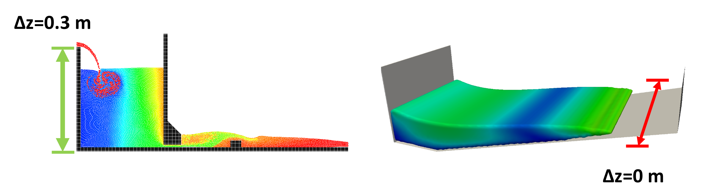
Optional parameter inputs and migration boundaries¶
TimeOutExtra is conditional: retain a case's explicit extra-saving definition, but do not invent an automatic value when none exists. ViscoTime is likewise included only when a case uses an external viscosity history. Neither belongs in an unconditional list of values to add to every case.
Three types of migration must be kept distinct:
| Category | Example | Consequence |
|---|---|---|
| Syntax-only | Boundary 2 → mDBC; StepAlgorithm 1 → VER; numeric boolean → Y/N where documented. | Retains the selected option's meaning, subject to its prerequisites. |
| Additional settings required to preserve the documented selection | Old ViscoTreatment 2 → LAM plus Turbulence SPS; old PartsOutMax p → MinFluidStop 1−p. | Omitting the second setting or copying p unchanged changes the intended configuration. |
| Potential numerical change | Old Cubic Spline → WC2; removed density-diffusion model → NO; older single-precision position computation → current double precision. | Not a claim of numerical equivalence. Review the affected configuration before treating it as the same method. |
A disabled legacy parameter is absent for migration purposes. In the overview illustration, #Shifting, #ShiftCoef, #ShiftTFS, #DtIni, #DtMin and #DtFixed are disabled keys; their stored values must not be activated accidentally. This is different from an active value such as value="#Dp*2".
The core-fluid mappings do not establish equivalent parameters for the specialised non-Newtonian or geomechanics solvers. Consult their guides for scope and compatibility. Preserve expressions, physical values and conditional options whenever their current meaning remains valid; do not combine alternatives merely because they appear together in a format collection.
A representative current parameter fragment¶
The following parameter block comes from the distributed dam-break configuration. It deliberately uses Visco=0.1 with ART, VER, DBC, no density diffusion and a 1.6 s duration with 0.01 s saving interval. These are the case's choices, not a proposed default configuration. Its extended upper Z bound is also retained. The outer build-identification comment is omitted; numerical settings and current parameter comments remain as supplied by that case.
<parameters>
<parameter key="SavePosDouble" value="N" comment="Saves particle position using double precision: Y/N (default=N)"/>
<parameter key="SaveExtraParts" value="0" comment="Part interval or list for saving extra data for restart option (default=0)"/>
<parameter key="Boundary" value="DBC" comment="Boundary method: DBC, mDBC, MIX:MixBC (default=DBC)"/>
<parameter key="SlipMode" value="NS" comment="Slip mode for mDBC: NS:No-slip, FS:Free slip, V0:TanVel=0, M22:mDBC 2022 (default=NS)"/>
<parameter key="NoPenetration" value="N" comment="Activate No-Penetration option for mDBC: Y/N (default=N)"/>
<parameter key="StepAlgorithm" value="VER" comment="Step Algorithm: SYM:Symplectic, VER:Verlet (default=SYM)"/>
<parameter key="VerletSteps" value="40" comment="Verlet only: Number of steps to apply Euler timestepping (default=40)"/>
<parameter key="Kernel" value="WC2" comment="Interaction Kernel: WC2:WendlandC2, WC6:WendlandC6 (default=WC2)"/>
<parameter key="ViscoTreatment" value="ART" comment="Viscosity formulation: LAM:Laminar, ART:Artificial (default=LAM)"/>
<parameter key="Visco" value="0.1" comment="Viscosity value. Typically 0.01 for Artificial and 1e-6 m^2/s (water kinematic viscosity) for Laminar"/>
<parameter key="ViscoBoundFactor" value="1" comment="Multiply viscosity value with boundary (default=1)"/>
<parameter key="Turbulence" value="NO" comment="Turbulence model: NO:None, SPS:Sub-particle scale (default=NO)"/>
<parameter key="DensityDT" value="NO" comment="Density Diffusion Term: NO:None, FO:Fourtakas (default=NO)"/>
<parameter key="DensityDTvalue" value="0.1" comment="DDT value (default=0.1)"/>
<parameter key="DivCleanKp" value="0" comment="Kappa parameter for Divergence Cleaning (equal to coefsound) (default=0)"/>
<parameter key="Shifting" value="0" comment="Shifting mode 0:None, 1:Ignore bound, 2:Ignore fixed, 3:Full, 4:Full advanced (default=0)"/>
<parameter key="ShiftCoef" value="-2" comment="Coefficient for standard shifting computation (default=-2)"/>
<parameter key="ShiftTFS" value="0" comment="Threshold to detect free surface. Typically 1.5 for 2D and 2.75 for 3D (default=0)"/>
<parameter key="ShiftAdvCoef" value="-0.01" comment="Coefficient for advanced shifting computation (default=-0.01)"/>
<parameter key="ShiftAdvALE" value="N" comment="ALE formulation for advanced shifting: Y/N (default=N)"/>
<parameter key="ShiftAdvNCPress" value="N" comment="Non conservative pressure formulation for advanced shifting: Y/N (default=N)"/>
<parameter key="RigidAlgorithm" value="SPH" comment="Rigid Algorithm: FREE:collision-free, SPH, DEM, CHR:Chrono collision (default=SPH)"/>
<parameter key="FtPause" value="0.0" comment="Time to freeze the floatings at simulation start (warmup) (default=0)" units_comment="seconds"/>
<parameter key="FtIgnoreRadius" value="N" comment="Ignores floating body radius with periodic conditions: Y/N (default=N)"/>
<parameter key="CoefDtMin" value="0.05" comment="Coefficient to calculate minimum time step dtmin=coefdtmin*h/speedsound (default=0.05)"/>
<parameter key="DtIni" value="0" comment="Initial time step. Use 0 to default use (default=h/speedsound)" units_comment="seconds"/>
<parameter key="DtMin" value="0" comment="Minimum time step. Use 0 to default use (default=coefdtmin*h/speedsound)" units_comment="seconds"/>
<parameter key="DtFixed" value="0" comment="Fixed Dt value. Use 0 to disable (default=disabled)" units_comment="seconds"/>
<parameter key="DtFixedFile" value="NONE" comment="Dt values are loaded from file. Use NONE to disable (default=disabled)" units_comment="milliseconds (ms)"/>
<parameter key="DtAllParticles" value="N" comment="Velocity of all the particles is used to calculate DT. Y:All, N:Only fluid/floating (default=N)"/>
<parameter key="TimeMax" value="1.6" comment="Time of simulation" units_comment="seconds"/>
<parameter key="TimeOut" value="0.01" comment="Time out data" units_comment="seconds"/>
<parameter key="RhopOutMin" value="700" comment="Minimum density valid (default=700)" units_comment="kg/m^3"/>
<parameter key="RhopOutMax" value="1300" comment="Maximum density valid (default=1300)" units_comment="kg/m^3"/>
<parameter key="WrnPartsOut" value="Y" comment="Active warning according to number of out particles: Y/N (default=Y)"/>
<parameter key="MinFluidStop" value="0" comment="Minimum proportion of initial fluid particles to continue the simulation 0:Never stops, 0.1:Stops when fluid drops to 10%. (default=0)"/>
<simulationdomain comment="Defines domain of simulation (default=Uses minimum and maximum position of the generated particles)">
<posmin x="default" y="default" z="default" comment="e.g.: x=0.5, y=default-1, z=default-10%"/>
<posmax x="default" y="default" z="default + 50%"/>
</simulationdomain>
</parameters>
Numerical relationships behind the configuration¶
The following relationships explain the numerical settings discussed in the general presentation. They describe the source formulations and notation; they are not a substitute for a complete discretisation, implementation-specific boundary treatment or stability analysis. Historical alternatives are identified explicitly where the current parameter interface no longer selects them.
Pressure, gravity and artificial viscosity¶
Here a and b denote interacting particles, m is mass, ρ density, P pressure, W the smoothing kernel, and g gravity. The artificial-viscosity term in the source applies to approaching pairs:
The symbols cab, μab and ρab are the pairwise quantities in that formulation. Their complete averaging and regularisation definitions must follow the selected solver formulation; the displayed relation alone does not define a standalone viscosity implementation.
Kernel shapes¶
The source compares the following shapes using q=r/h. Cubic Spline is retained here to explain the historical comparison; it is not an available current Kernel identifier.
For this historical cubic form, the source gives αD=10/(7πh²) in 2D and 1/(πh³) in 3D.
Laminar viscosity and SPS stress¶
The presentation separates the pressure/gravity contribution from the laminar-viscous and SPS-stress contributions:
ν0 denotes kinematic viscosity, η the regularisation appearing in the source expression and τ the sub-particle-scale stress. The stress term is associated with the turbulence treatment; choosing LAM does not by itself assert that SPS is enabled.
Density-diffusion background¶
The presentation writes the continuity equation with a density-diffusion contribution in the form below, with Vj the particle volume and δ the diffusion coefficient:
These expressions preserve the source distinction between total, dynamic and hydrostatic density differences. The ordering of an ij difference and the kernel-gradient convention must remain consistent across a derivation. They do not establish that removing a historical model preserves its numerical contribution. For a current case, select only the documented NO or FO option and assess the resulting method.
Divergence-cleaning field¶
ψ is the additional cleaning field; κ is associated with DivCleanKp in the source. The displayed λ and σ belong to the characteristic time-scale expression. These relations explain the added field and dissipation; they do not supply every implementation coefficient or establish applicability to an arbitrary pressure range. Follow the selected solver method and the compatibility restrictions stated above.
Standard particle shifting¶
The source suppresses the normal component of shifting at a detected free surface and illustrates a 1.5 particle-divergence threshold in 2D. The sign of the coefficient is part of the formulation; the XML standard-shifting coefficient is illustrated as −2. Do not replace the configurable threshold with a hard-coded universal value or transfer these standard-shifting relations directly to the advanced ALE formulation.
Time-integration stages¶
The Verlet schematic uses the acceleration symbol F and density rate D. Between its periodic corrections, it writes:
Once every M steps, with M selected by VerletSteps, its correction uses:
The Symplectic predictor and corrector are shown in the source with the following temporal indices:
These source schematics are not a complete derivation of every state update. Their temporal-index notation should not be used to implement or change the solver independently of its full integration algorithm.
Generated particle information and execution diagnostics¶
Generated particle populations¶
The following execution/particles fragment records the populations produced by GenCase for the original example. It describes generated output, rather than prescribing a desired total particle count; those counts result from the geometry and particle-generation settings.
<particles np="8079" nb="1795" nbf="1659" mkboundfirst="10" mkfluidfirst="1">
<_summary>
<positions units_comment="metres (m)">
<posmin x="-0.5" y="0" z="-0.06" />
<posmax x="16.006" y="0" z="1.01" />
</positions>
<fixed count="1659" id="0-1658" mkcount="1" mkvalues="10" />
<moving count="136" id="1659-1794" mkcount="1" mkvalues="20" />
<fluid count="6284" id="1795-8078" mkcount="1" mkvalues="1" />
</_summary>
<fixed mkbound="0" mk="10" begin="0" count="1659" />
<moving mkbound="10" mk="20" begin="1659" count="136" refmotion="0" />
<fluid mkfluid="0" mk="1" begin="1795" count="6284" />
</particles>
Here np=8079 is the total, nb=1795 the boundary count and nbf=1659 the fixed-boundary count. Thus np - nb = 6284 particles are fluid and nb - nbf = 136 are non-fixed boundary particles. The explicit moving population identifies those 136 as moving particles in this example; this classification must not be assumed for every case.
begin is the first particle index and count the population size; _summary gives the corresponding inclusive ID ranges and marker values. Local labels mkfluid and mkbound differ from the generated mk: here mkfluidfirst=1 maps fluid label 0 to marker 1, and mkboundfirst=10 maps boundary labels 0 and 10 to markers 10 and 20. These offsets belong to this example's nine-fluid-label arrangement. Read each case's generated offsets before reusing marker values from visualisation in an XML selector; other examples reserve different label counts.
Generated execution constants¶
The original example also contains this execution/constants fragment. It records the resolved values used for execution, rather than the user's casedef/constantsdef inputs.
<constants>
<data2d value="true" />
<data2dposy value="0" units_comment="metres (m)" />
<gravity x="0" y="0" z="-9.81" units_comment="m/s^2" />
<cflnumber value="0.2" />
<gamma value="7" />
<rhop0 value="1000" units_comment="kg/m^3" />
<dp value="0.03" units_comment="metres (m)" />
<h value="5.0911688245E-02" units_comment="metres (m)" />
<b value="3.3634285714E+05" units_comment="Pascal (Pa)" />
<massbound value="9.0000000000E-01" units_comment="kg" />
<massfluid value="9.0000000000E-01" units_comment="kg" />
</constants>
data2d=true and data2dposy=0 identify the two-dimensional X–Z representation at Y=0. Gravity, cflnumber, gamma, rhop0 and dp record the case's physical and numerical choices. The generated h, b, massbound and massfluid contain resolved quantities; input entries with auto="true" request their calculation. Both particle masses are 0.9 kg in this 2D representation. The original precision and unit annotations are retained; these case values are not defaults or a prescription for a three-dimensional particle mass.
Compare the generated constants with the intended spacing, dimensionality, sound-speed and mass configuration to detect inconsistent inputs. Correct the case definition and regenerate the data when necessary; manually editing the execution XML does not regenerate its associated particles.
Execution logs and output checks¶
Run.out identifies the executable/device, loaded configuration and input files, domain limits, particle populations and memory allocation. It records saved PART outputs, simulated time and progress. The source log distinguishes physical time from wall-clock progress:
| Source log field | Interpretation |
|---|---|
PART |
Saved particle-output identifier. |
PartTime |
Simulated physical time at that saved state. |
TotalSteps |
Accumulated integration-step count. |
Steps |
Integration steps since the preceding output. |
Time/Seg |
Computational time per second of simulated time in the source log. |
Finish time |
Estimated wall-clock completion time. |
The completion summary reports minimum-step adjustments, excluded particles, total and simulation runtime, step rate, steps/PART files, maximum particle/cell counts and CPU/GPU memory; optional GPU timers distinguish neighbour-list construction, forces, integration and motion. The separate historical log example reports 49,060 steps and 101 PART files. Its hardware and timings are illustrative, not current performance guarantees. Check warnings and final completion status: progress estimates and existing output files do not establish successful execution.
Inspect generated Case_All.vtk, Case_Bound.vtk and Case_Fluid.vtk to check populations, holes, overlaps and moving/floating selections; a successful generator exit alone does not establish a correct physical geometry. Saved PART data contain particle states, excluded-particle outputs record removals, floating-body records track body motion, time-step diagnostics describe integration steps, and gauge outputs contain configured measurements. Their availability depends on the selected outputs. Post-processing requires the corresponding saved data and metadata; changing a plotting command cannot recover an unsaved particle state or measurement time.
Related XML Guides and reference material¶
| Topic | Detailed documentation |
|---|---|
| Boundary normals, slip and mixed conditions | mDBC |
| Open boundaries and imported fields | Inlet/Outlet |
| Resolution regions and exchange | Variable resolution |
| TL-SPH deformable structures | Flexible structures |
| Dynamic mooring lines | MoorDynPlus |
| Rigid-body contact and links | Chrono |
| Euler–Bernoulli beam coupling | ChronoFEA |
| Advanced regularisation and ALE | Advanced shifting |
| Specialised rheological formulation | Multiphase non-Newtonian |
| Specialised geomaterial formulation | Geomechanics |
The last two guides describe specialised module contexts; their historical configurations are not automatically core-solver v6 inputs. Flexible Structures and ChronoFEA are different structural formulations and must not be combined simply because both deform a structure.
This guide draws on the DualSPHysics team's general XML Guide presentation, January 2026, and the format references distributed in doc/xml_format. In particular, consult GenCase_CaseTemplate.xml and _FmtXML__Parameters.xml alongside the wave, damping, relaxation-zone, gauge, acceleration, saving and output-selection references. A format file is a collection of alternatives and illustrative values, not necessarily a runnable complete case. Keep the exact distributed reference files available with the case materials.